Gallery & Master Index of All Figure Examples
Browse all 112 reproducible phylogenetic figures across Chapters 1–13 and Appendix A. Filter by book Part, Chapter, or API symbol below, inspect crisp vector renderings, expand any figure's attached reproducible Python snippet inline, or jump straight to its detailed narrative section.
Visual Figure Gallery
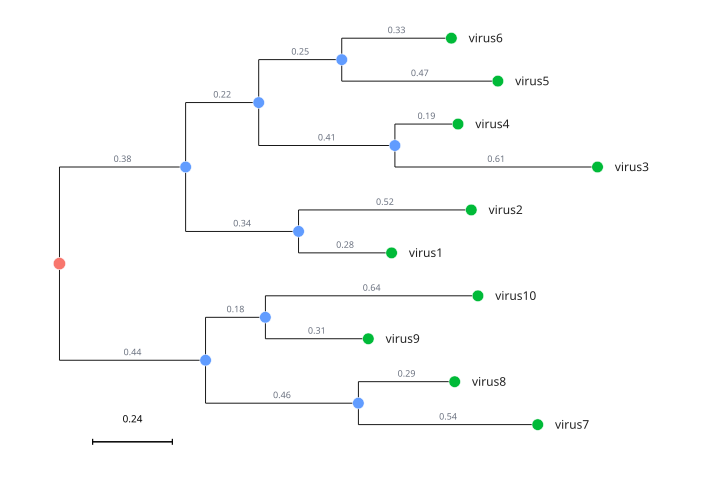
▶ Show / Hide Python Code read_treeggtreegeom_tippointgeom_nodepoint
nwk = (
"(((virus1:0.28,virus2:0.52):0.34,((virus3:0.61,virus4:0.19):0.41,"
"(virus5:0.47,virus6:0.33):0.25):0.22):0.38,"
"((virus7:0.54,virus8:0.29):0.46,(virus9:0.31,virus10:0.64):0.18):0.44);"
)
tr = read_tree(text=nwk)
p = (
ggtree(tr)
+ geom_text(aes(x="branch", label="branch.length"), color="#6B7280", vjust=-0.45, size=2.9)
+ geom_tippoint(color="#00BA38", size=3.2)
+ geom_nodepoint(color="#619CFF", size=3.2)
+ geom_rootpoint(color="#F8766D", size=3.4)
+ geom_tiplab(offset=0.04, size=3.8)
+ geom_treescale(x=0.1, y=0.6)
+ hexpand(0.14)
)
p
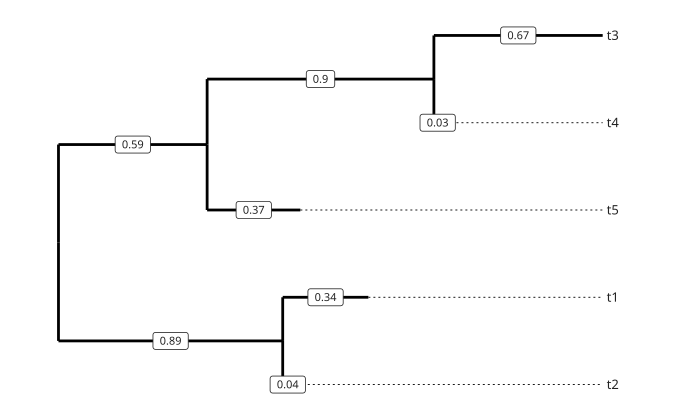
▶ Show / Hide Python Code read_treeggtreegeom_tiplabgeom_label
tr = read_tree(text="((t2:0.04,t1:0.34):0.89,(t5:0.37,(t4:0.03,t3:0.67):0.9):0.59);")
p = (
ggtree(tr, size=2)
+ geom_tiplab(align=True, linetype="dotted", linesize=0.5, size=4.2)
+ geom_label(aes(x="branch", label="branch.length"), size=3.4)
+ hexpand(0.12)
)
p

▶ Show / Hide Python Code treeio_diagramTreeDiagram
treeio_diagram()

▶ Show / Hide Python Code read_jtreeggtreegeom_textgeom_tiplab
pmltree = read_jtree(system_file("extdata", "TDbook", "pmltree.jtree"))
p = (
ggtree(pmltree)
+ geom_text(aes(x="branch", label="AA_subs"), vjust=-0.5, size=2.3)
+ hexpand(0.18)
)
p
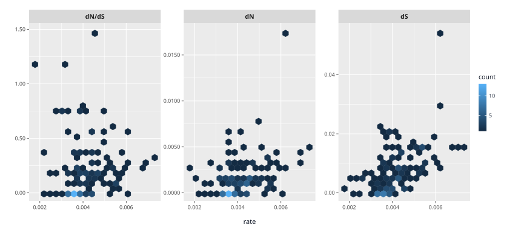
▶ Show / Hide Python Code read_beastread_codemlmerge_treefortify
beast_tree = read_beast(system_file("extdata", "MCC_FluA_H3.tree"))
codeml_tree = read_codeml(
system_file("extdata", "rst"),
system_file("extdata", "mlc"),
)
merged_tree = merge_tree(beast_tree, codeml_tree)
raw = fortify(merged_tree)
recs = [
r for r in raw.to_records()
if isinstance(r.get("dN_vs_dS"), (int, float))
and isinstance(r.get("rate"), (int, float))
and 0.0 <= float(r["dN_vs_dS"]) <= 1.5
]
df = DataFrame({
"rate": [float(r["rate"]) for r in recs],
"dN_vs_dS": [float(r["dN_vs_dS"]) for r in recs],
"dN": [float(r["dN"]) if r.get("dN") is not None else float("nan") for r in recs],
"dS": [float(r["dS"]) if r.get("dS") is not None else float("nan") for r in recs],
})
df_long = gather(df, "type", "value", "dN_vs_dS", "dN", "dS")
remap = {"dN_vs_dS": "dN/dS", "dN": "dN", "dS": "dS"}
df_long["type"] = factor(
[remap.get(str(v), str(v)) for v in df_long["type"].tolist()],
levels=["dN/dS", "dN", "dS"],
)
p = (
ggplot(df_long, aes("rate", "value"))
+ geom_hex(bins=22)
+ facet_wrap("~type", scales="free_y")
+ xlab("rate")
+ ylab("")
)
p

▶ Show / Hide Python Code read_treeread_tableleft_joinroot
tr_boots = read_tree(system_file("extdata", "TDbook", "tree_boots.nwk"))
df_tip = read_table(system_file("extdata", "TDbook", "df_tip_data.tsv"), header=True, sep="\t")
df_inode = read_table(system_file("extdata", "TDbook", "df_inode_data.tsv"), header=True, sep="\t")
trda = left_join(tr_boots, df_tip, by={"label": "Newick_label"})
trda = left_join(trda, df_inode, by={"label": "newick_label"})
trda2 = root(trda, outgroup="Suricata_suricatta", edgelabel=True)
def _build_panel(td, x_hi: float, show_legend: bool):
p = (
ggtree(td)
+ geom_nodelab(aes(x="branch", label="bootstrap"), nudge_y=0.36, hjust=0.5, size=2.7)
+ geom_tippoint(aes(shape="trophic_habit", color="trophic_habit", size="mass_in_kg"))
+ scale_size_continuous(range=(2.0, 5.2))
+ geom_tiplab(offset=0.14, size=2.9)
+ geom_nodelab(aes(label="vernacularName.y", fill="posterior"), geom="label", size=2.6)
+ scale_fill_gradientn(colors=["#EDF8B1", "#7FCDBB", "#2C7FB8"])
+ xlim(-0.1, x_hi)
)
if not show_legend:
p = p + theme(legend_position="none")
return p
plot_list(_build_panel(trda, 4.8, False), _build_panel(trda2, 5.8, True), ncol=2, tag_levels="A")
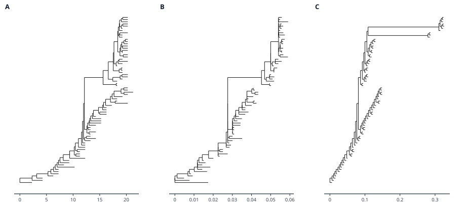
▶ Show / Hide Python Code merge_treerescale_treeggtreetheme_tree2
beast_tree = read_beast(system_file("extdata", "MCC_FluA_H3.tree"))
codeml_tree = read_codeml(
system_file("extdata", "rst"),
system_file("extdata", "mlc"),
)
merged_tree = merge_tree(beast_tree, codeml_tree)
p1 = ggtree(merged_tree) + theme_tree2()
p2 = ggtree(rescale_tree(merged_tree, "dN")) + theme_tree2()
p3 = ggtree(rescale_tree(merged_tree, "rate")) + theme_tree2()
plot_list(p1, p2, p3, ncol=3, tag_levels="A")
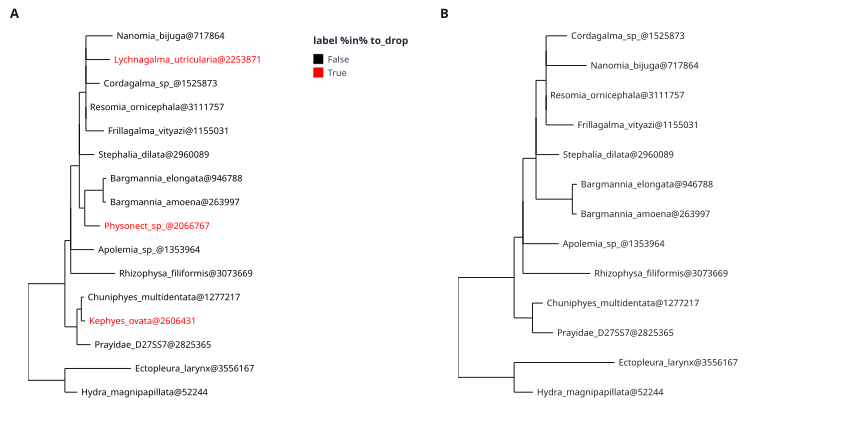
▶ Show / Hide Python Code read_nhxdrop_tipggtreescale_color_manual
nhx = read_nhx(system_file("extdata", "NHX", "phyldog.nhx"))
to_drop = [
"Physonect_sp_@2066767",
"Lychnagalma_utricularia@2253871",
"Kephyes_ovata@2606431",
]
p1 = (
ggtree(nhx)
+ geom_tiplab(aes(color="label %in% to_drop"), size=2.8)
+ scale_color_manual(values=["black", "red"])
+ xlim(0, 0.85)
)
nhx_reduced = drop_tip(nhx, to_drop)
p2 = (
ggtree(nhx_reduced)
+ geom_tiplab(size=2.8)
+ xlim(0, 0.85)
)
plot_list(p1, p2, ncol=2, tag_levels="A")

▶ Show / Hide Python Code read_beasttree_subsetggtreegeom_rootedge
beast_tree = read_beast(system_file("extdata", "MCC_FluA_H3.tree"))
tree2 = tree_subset(beast_tree, "A/Swine/HK/168/2012", levels_back=4)
p1 = ggtree(beast_tree) + geom_tiplab(offset=0.05, size=1.8) + xlim(0, 40) + theme_tree2()
p2 = (
ggtree(tree2, aes(color="group"))
+ scale_color_manual(values=["black", "red"], guide="none")
+ geom_tiplab(offset=0.2, size=2.4)
+ xlim(0, 4.5)
+ theme_tree2()
)
p3 = (
p2
+ geom_point(aes(fill="rate"), color="black", shape=21, size=3.4)
+ scale_fill_continuous(low="blue", high="red")
+ xlim(0, 5.2)
+ theme(legend_position="right")
)
p4 = (
ggtree(tree2, aes(color="group"), root_position=tree2.root_edge)
+ geom_tiplab(size=2.4)
+ xlim(18, 24)
+ scale_color_manual(values=["black", "red"], guide="none")
+ theme_tree2()
)
p5 = p4 + geom_rootedge(rootedge=tree2.root_edge) + xlim(0, 50)
plot_list(p1, p2, p3, p4, p5, design="AABBCC\nAADDEE", tag_levels="A")
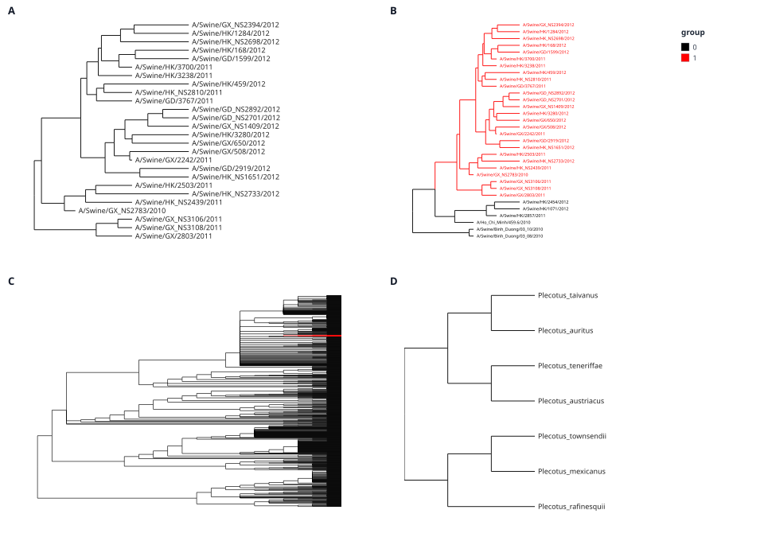
▶ Show / Hide Python Code read_beastread_treeMRCAtree_subset
beast_tree = read_beast(system_file("extdata", "MCC_FluA_H3.tree"))
clade = tree_subset(beast_tree, 121, levels_back=0)
clade2 = tree_subset(beast_tree, 121, levels_back=2)
p1 = ggtree(clade) + geom_tiplab(size=2.1) + hexpand(0.55)
p2 = (
ggtree(clade2, aes(color="group"))
+ geom_tiplab(size=1.9)
+ scale_color_manual(values=["black", "red"])
+ hexpand(0.55)
)
chiroptera = read_tree(system_file("extdata", "TDbook", "chiroptera.nwk"))
plecotus_tips = [t for t in chiroptera.tip_label if "Plecotus" in t]
ch_grp = groupOTU(chiroptera, plecotus_tips)
plec_clade = MRCA(chiroptera, plecotus_tips)
sub_plec = tree_subset(chiroptera, plec_clade, levels_back=0)
p3 = (
ggtree(ch_grp, aes(color="group"), size=0.35)
+ scale_color_manual(values=["black", "red"])
+ theme(legend_position="none")
)
p4 = ggtree(sub_plec) + geom_tiplab(size=2.8) + xlim(0, 6.0)
plot_list(p1, p2, p3, p4, ncol=2, nrow=2, tag_levels="A")

▶ Show / Hide Python Code rtreeggtreegeom_treegeom_hilight
set_seed(1024)
x = rtree(30)
y = rtree(30)
p1 = ggtree(x, layout="roundrect")
d1 = fortify(x)
d2 = fortify(y)
max_d1 = max(d1["x"].tolist())
max_d2 = max(d2["x"].tolist())
d2["x"] = [max_d2 - float(vx) + max_d1 + 1.8 for vx in d2["x"].tolist()]
tip1 = [r for r in d1.to_records() if r.get("isTip")]
tip2 = [r for r in d2.to_records() if r.get("isTip")]
dd = DataFrame({
"label": [str(r["label"]) for r in tip1] + [str(r["label"]) for r in tip2],
"x": [float(r["x"]) for r in tip1] + [float(r["x"]) for r in tip2],
"y": [float(r["y"]) for r in tip1] + [float(r["y"]) for r in tip2],
})
p = (
p1
+ geom_hilight(mapping=aes(subset="node %in% c(38, 48, 58, 36)", fill="as.factor(node)"))
+ labs(fill="clades for tree in left")
+ new_scale_fill()
+ geom_hilight(data=d2, mapping=aes(subset="node %in% c(38, 48, 58)", fill="as.factor(node)"))
+ labs(fill="clades for tree in right")
+ geom_tree(data=d2, layout="ellipse")
+ geom_line(aes("x", "y", group="label"), data=dd, color="#9CA3AF")
+ geom_tiplab(color="white", geom="shadowtext", bg_colour="#CA6767", size=2.9)
+ geom_tiplab(data=d2, hjust=1, color="white", geom="shadowtext", bg_colour="#CA6767", size=2.9)
)
p

▶ Show / Hide Python Code rtreefortifyggtreegeom_tree
set_seed(2020)
x = rtree(15)
y = rtree(15)
z = rtree(15)
d1 = fortify(x)
d2 = fortify(y)
d3 = fortify(z)
shift2 = max(d1["x"].tolist()) + 2.4
d2["x"] = [float(vx) + shift2 for vx in d2["x"].tolist()]
shift3 = max(d2["x"].tolist()) + 2.4
d3["x"] = [float(vx) + shift3 for vx in d3["x"].tolist()]
tips = [r for r in (d1.to_records() + d2.to_records() + d3.to_records()) if r.get("isTip")]
dd = DataFrame({
"label": [str(r["label"]) for r in tips],
"x": [float(r["x"]) for r in tips],
"y": [float(r["y"]) for r in tips],
"node": [int(r["node"]) for r in tips],
})
p = (
ggtree(x, layout="roundrect")
+ geom_tree(data=d2)
+ geom_tree(data=d3)
+ geom_line(aes("x", "y", group="label", color="node < 15"), data=dd, alpha=0.35)
+ geom_tiplab(size=2.9)
+ geom_tiplab(data=d2, size=2.9)
+ geom_tiplab(data=d3, size=2.9)
+ hexpand(0.08)
)
p
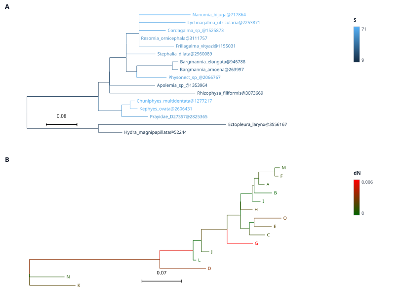
▶ Show / Hide Python Code read_nhxread_codemlwrite_beastread_beast
import os
import tempfile
nhx = read_nhx(system_file("extdata", "NHX", "phyldog.nhx"))
mlc = read_codeml(
system_file("extdata", "treeio", "PAML_Codeml", "rst"),
system_file("extdata", "treeio", "PAML_Codeml", "mlc"),
)
with tempfile.TemporaryDirectory() as d:
b1 = os.path.join(d, "nhx_beast.nexus")
b2 = os.path.join(d, "mlc_beast.nexus")
write_beast(nhx, file=b1)
write_beast(mlc, file=b2)
tr1 = read_beast(b1)
tr2 = read_beast(b2)
p1 = (
ggtree(tr1, aes(color="S"))
+ scale_color_continuous(low="#132B43", high="#56B1F7")
+ geom_tiplab(size=2.8)
+ geom_treescale(x=0.05, y=2.0)
+ hexpand(0.32)
)
p2 = (
ggtree(tr2, aes(color="dN"))
+ scale_color_continuous(low="darkgreen", high="red")
+ geom_tiplab(size=3.0)
+ geom_treescale(x=0.2, y=1.5)
+ hexpand(0.24)
)
plot_list(p1, p2, ncol=1, nrow=2, tag_levels="A")

▶ Show / Hide Python Code ggplotggtreegeom_treetheme_tree
from ggtree import (
aes,
geom_tree,
ggplot,
ggtree,
plot_list,
read_tree,
system_file,
theme_tree,
)
nwk = system_file("extdata", "sample.nwk")
tree = read_tree(nwk)
p1 = ggplot(tree, aes("x", "y")) + geom_tree() + theme_tree()
p2 = ggtree(tree, color="firebrick", size=2, linetype="dotted")
p3 = ggtree(tree, ladderize=False)
p4 = ggtree(tree, branch_length="none")
plot_list(p1, p2, p3, p4, ncol=2, tag_levels="A")
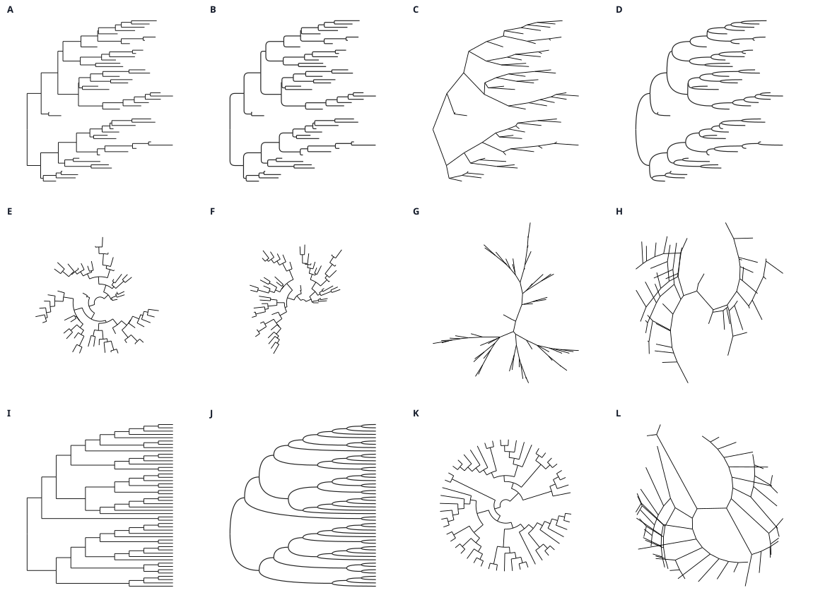
▶ Show / Hide Python Code ggtreertreeset_seedplot_list
from ggtree import ggtree, plot_list, rtree, set_seed
set_seed(2017 - 2 - 16)
tree = rtree(50)
pA = ggtree(tree)
pB = ggtree(tree, layout="roundrect")
pC = ggtree(tree, layout="slanted")
pD = ggtree(tree, layout="ellipse")
pE = ggtree(tree, layout="circular")
pF = ggtree(tree, layout="fan", open_angle=120)
pG = ggtree(tree, layout="equal_angle")
pH = ggtree(tree, layout="daylight")
pI = ggtree(tree, branch_length="none")
pJ = ggtree(tree, layout="ellipse", branch_length="none")
pK = ggtree(tree, branch_length="none", layout="circular")
pL = ggtree(tree, layout="daylight", branch_length="none")
return plot_list(
pA, pB, pC, pD, pE, pF, pG, pH, pI, pJ, pK, pL,
ncol=4,
tag_levels="A",
)
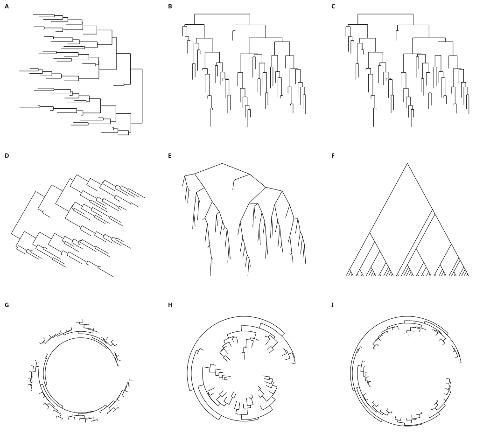
▶ Show / Hide Python Code ggtreescale_x_reversecoord_fliplayout_dendrogram
from ggtree import (
as_ggplot,
coord_flip,
ggtree,
layout_dendrogram,
layout_inward_circular,
plot_list,
rtree,
scale_x_reverse,
set_seed,
xlim,
)
set_seed(2017 - 2 - 16)
tree = rtree(50)
pA = ggtree(tree) + scale_x_reverse()
pB = ggtree(tree) + coord_flip()
pC = ggtree(tree) + layout_dendrogram()
pD = as_ggplot(ggtree(tree), angle=-30, scale=0.9)
pE = ggtree(tree, layout="slanted") + coord_flip()
pF = ggtree(tree, layout="slanted", branch_length="none") + layout_dendrogram()
pG = ggtree(tree, layout="circular") + xlim(-10, None)
pH = ggtree(tree) + layout_inward_circular()
pI = ggtree(tree) + layout_inward_circular(xlim=15)
return plot_list(
pA, pB, pC, pD, pE, pF, pG, pH, pI,
ncol=3,
tag_levels="A",
)
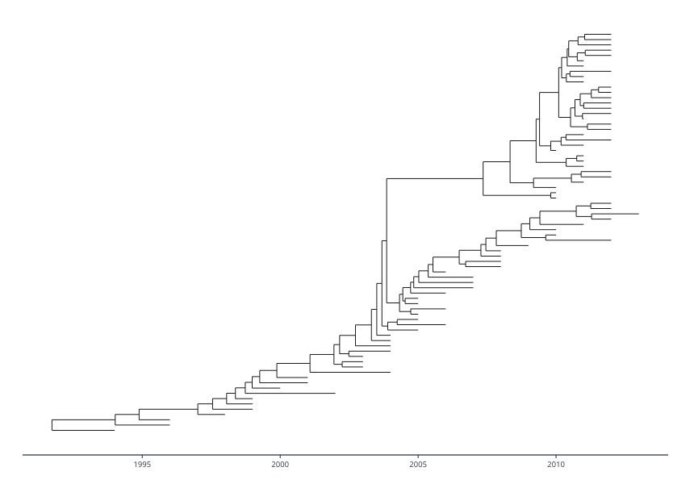
▶ Show / Hide Python Code read_beastggtreetheme_tree2
from ggtree import ggtree, read_beast, system_file, theme_tree2
beast_file = system_file("extdata", "MCC_FluA_H3.tree")
beast_tree = read_beast(beast_file)
ggtree(beast_tree, mrsd="2013-01-01") + theme_tree2()

▶ Show / Hide Python Code read_beastgroupOTUggtreetheme_classic
from ggtree import (
aes,
annotate,
geom_nodepoint,
geom_rootpoint,
geom_tippoint,
ggtree,
groupOTU,
read_beast,
scale_color_manual,
system_file,
theme,
theme_classic,
ylab,
)
beast_file = system_file("extdata", "MCC_FluA_H3.tree")
beast_tree = read_beast(beast_file)
nag_file = system_file("extdata", "NAG_inHA1.txt")
with open(nag_file, encoding="utf-8") as fh:
rows = [line.strip().split("\t") for line in fh if line.strip()]
nag = {r[0]: float(r[1]) for r in rows}
tips = beast_tree.phylo.tip_label
swine_tips = [t for t in tips if "Swine" in t]
beast_tree = groupOTU(beast_tree, swine_tips, group_name="host")
p = (
ggtree(beast_tree, aes(color="host"), mrsd="2013-01-01", yscale="label", yscale_mapping=nag)
+ theme_classic()
+ theme(legend_position="none")
+ scale_color_manual(values=["blue", "red"], labels=["human", "swine"])
+ ylab("Number of predicted N-linked glycosylation sites")
)
return (
p
+ geom_nodepoint(color="grey", size=3, alpha=0.8)
+ geom_rootpoint(color="black", size=3)
+ geom_tippoint(size=3, alpha=0.5)
+ annotate("point", 1992, 5.6, size=3, color="black")
+ annotate("point", 1992, 5.4, size=3, color="grey")
+ annotate("point", 1991.6, 5.2, size=3, color="blue")
+ annotate("point", 1992, 5.2, size=3, color="red")
+ annotate("text", 1992.3, 5.6, hjust=0, size=4, label="Root node")
+ annotate("text", 1992.3, 5.4, hjust=0, size=4, label="Internal nodes")
+ annotate("text", 1992.3, 5.2, hjust=0, size=4, label="Tip nodes (blue: human; red: swine)")
)

▶ Show / Hide Python Code ggtreegeom_treescaletheme_tree2plot_list
from ggtree import geom_treescale, ggtree, plot_list, rtree, set_seed, theme_tree2
set_seed(2017 - 2 - 16)
tree = rtree(50)
p1 = ggtree(tree) + geom_treescale()
p2 = ggtree(tree) + geom_treescale(x=0, y=45, width=1, color="red")
p3 = ggtree(tree) + geom_treescale(fontsize=6, linesize=2, offset=1)
p4 = ggtree(tree) + theme_tree2()
plot_list(p1, p2, p3, p4, ncol=2, tag_levels="A")
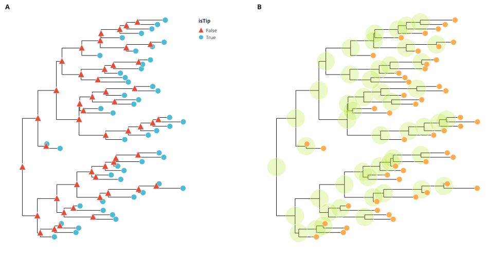
▶ Show / Hide Python Code ggtreegeom_pointgeom_nodepointgeom_tippoint
from ggtree import (
aes,
geom_nodepoint,
geom_point,
geom_tippoint,
ggtree,
plot_list,
rtree,
set_seed,
)
set_seed(2017 - 2 - 16)
tree = rtree(50)
p1 = ggtree(tree) + geom_point(aes(shape="isTip", color="isTip"), size=3)
p2 = (
ggtree(tree)
+ geom_nodepoint(color="#b5e521", alpha=1 / 4, size=10)
+ geom_tippoint(color="#FDAC4F", shape=8, size=3)
)
plot_list(p1, p2, ncol=2, tag_levels="A")

▶ Show / Hide Python Code ggtreegeom_tiplabgeom_nodepointplot_list
from ggtree import aes, geom_nodepoint, geom_tiplab, ggtree, plot_list, rtree, set_seed
set_seed(2017 - 2 - 16)
tree = rtree(50)
p1 = (
ggtree(tree)
+ geom_nodepoint(color="#b5e521", alpha=1 / 4, size=10)
+ geom_tiplab(size=3, color="purple")
)
p2 = ggtree(tree, layout="circular") + geom_tiplab(aes(angle="angle"), color="blue")
p3 = ggtree(tree) + geom_tiplab(as_ylab=True, color="firebrick")
plot_list(p1, p2, p3, ncol=3, tag_levels="A")
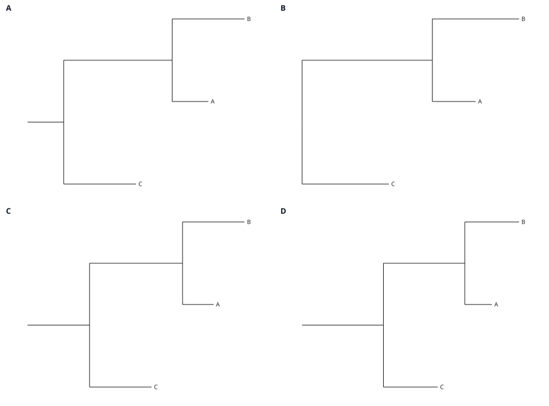
▶ Show / Hide Python Code read_treeggtreegeom_tiplabgeom_rootedge
from ggtree import geom_rootedge, geom_tiplab, ggtree, plot_list, read_tree
tree1 = read_tree(text="((A:1,B:2):3,C:2):1;")
pA = ggtree(tree1) + geom_tiplab() + geom_rootedge()
tree2 = read_tree(text="((A:1,B:2):3,C:2);")
pB = ggtree(tree2) + geom_tiplab() + geom_rootedge()
tree3 = read_tree(text="((A:1,B:2):3,C:2);")
tree3.root_edge = 2
pC = ggtree(tree3) + geom_tiplab() + geom_rootedge()
pD = ggtree(tree2) + geom_tiplab() + geom_rootedge(rootedge=3)
plot_list(pA, pB, pC, pD, ncol=2, tag_levels="A")

▶ Show / Hide Python Code read_beastggtreescale_color_continuoustheme
from ggtree import aes, ggtree, read_beast, scale_color_continuous, system_file, theme
beast_file = system_file("extdata", "MCC_FluA_H3.tree")
beast_tree = read_beast(beast_file)
return (
ggtree(beast_tree, aes(color="rate"))
+ scale_color_continuous(low="darkgreen", high="red")
+ theme(legend_position="right")
)
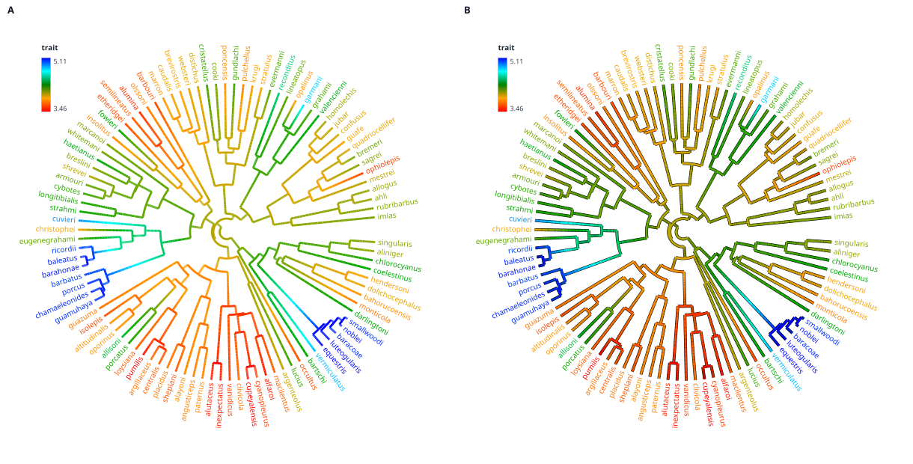
▶ Show / Hide Python Code read_treefastAncnodeidfull_join
from ggtree import (
DataFrame,
aes,
fastAnc,
full_join,
geom_tiplab,
geom_tree,
ggtree,
nodeid,
plot_list,
read_tree,
scale_color_gradientn,
system_file,
theme,
xlim,
)
tree_anole = read_tree(system_file("extdata", "TDbook", "tree_anole.nwk"))
svl_path = system_file("extdata", "TDbook", "df_svl.tsv")
with open(svl_path, encoding="utf-8") as fh:
lines = [line.strip() for line in fh if line.strip()]
svl = {k: float(v) for line in lines[1:] for k, v in [line.split("\t")]}
fit = fastAnc(tree_anole, svl, vars=True, CI=True)
tip_names = list(svl.keys())
tip_nodes = nodeid(tree_anole, tip_names)
td_nodes = [int(n) for n in tip_nodes]
td_vals = [svl[name] for name in tip_names]
nd_nodes = [int(n) for n in fit.ace.keys()]
nd_vals = [float(v) for v in fit.ace.values()]
d = DataFrame({"node": td_nodes + nd_nodes, "trait": td_vals + nd_vals})
tree = full_join(tree_anole, d, by="node")
cols = ["red", "orange", "green", "cyan", "blue"]
p1 = (
ggtree(tree, aes(color="trait"), layout="circular", ladderize=False, continuous="colour", size=2)
+ scale_color_gradientn(colours=cols)
+ geom_tiplab(hjust=-0.1)
+ xlim(0, 1.2)
+ theme(legend_position=(0.05, 0.85))
)
p2 = (
ggtree(tree, layout="circular", ladderize=False, size=2.8)
+ geom_tree(aes(color="trait"), continuous="colour", size=2)
+ scale_color_gradientn(colours=cols)
+ geom_tiplab(aes(color="trait"), hjust=-0.1)
+ xlim(0, 1.2)
+ theme(legend_position=(0.05, 0.85))
)
plot_list(p1, p2, ncol=2, tag_levels="A")
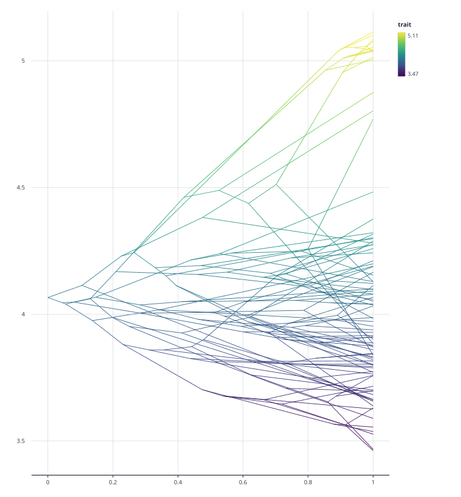
▶ Show / Hide Python Code fastAncfull_joinggtreescale_color_viridis_c
from ggtree import (
DataFrame,
aes,
fastAnc,
full_join,
ggtree,
nodeid,
read_tree,
scale_color_viridis_c,
system_file,
theme_minimal,
)
tree_anole = read_tree(system_file("extdata", "TDbook", "tree_anole.nwk"))
svl_path = system_file("extdata", "TDbook", "df_svl.tsv")
with open(svl_path, encoding="utf-8") as fh:
lines = [line.strip() for line in fh if line.strip()]
svl = {k: float(v) for line in lines[1:] for k, v in [line.split("\t")]}
fit = fastAnc(tree_anole, svl, vars=True, CI=True)
tip_names = list(svl.keys())
td_nodes = [int(n) for n in nodeid(tree_anole, tip_names)]
td_vals = [svl[name] for name in tip_names]
nd_nodes = [int(n) for n in fit.ace.keys()]
nd_vals = [float(v) for v in fit.ace.values()]
d = DataFrame({"node": td_nodes + nd_nodes, "trait": td_vals + nd_vals})
tree = full_join(tree_anole, d, by="node")
return (
ggtree(tree, aes(color="trait"), continuous="colour", yscale="trait")
+ scale_color_viridis_c()
+ theme_minimal()
)
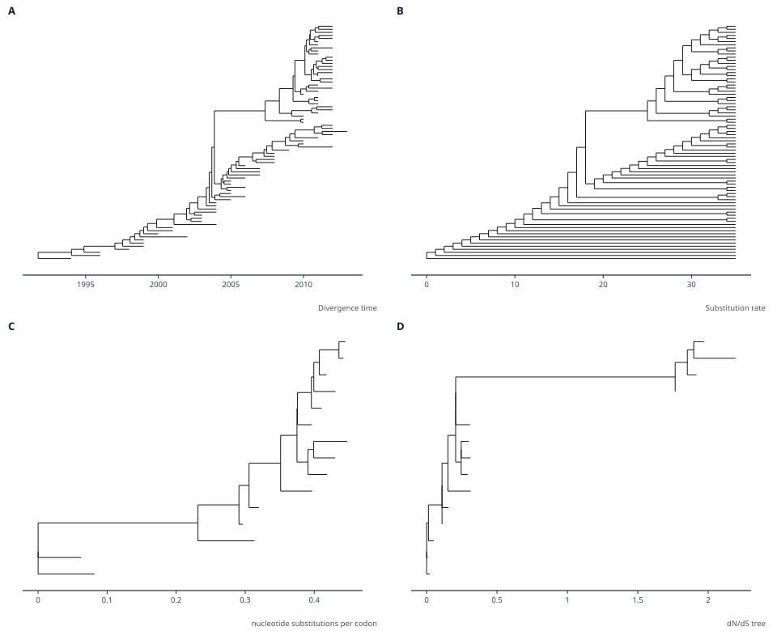
▶ Show / Hide Python Code read_beastread_codeml_mlcggtreetheme_tree2
from ggtree import (
ggtree,
labs,
plot_list,
read_beast,
read_codeml_mlc,
system_file,
theme_tree2,
)
beast_file = system_file("extdata", "MCC_FluA_H3.tree")
beast_tree = read_beast(beast_file)
p1 = ggtree(beast_tree, mrsd="2013-01-01") + theme_tree2() + labs(caption="Divergence time")
p2 = ggtree(beast_tree, branch_length="rate") + theme_tree2() + labs(caption="Substitution rate")
mlcfile = system_file("extdata", "treeio", "PAML_Codeml", "mlc")
mlc_tree = read_codeml_mlc(mlcfile)
p3 = ggtree(mlc_tree) + theme_tree2() + labs(caption="nucleotide substitutions per codon")
p4 = ggtree(mlc_tree, branch_length="dN_vs_dS") + theme_tree2() + labs(caption="dN/dS tree")
plot_list(p1, p2, p3, p4, ncol=2, tag_levels="A")

▶ Show / Hide Python Code ggtreetheme_treertreeset_seed
from ggtree import ggtree, plot_list, rtree, set_seed, theme_tree
set_seed(2019)
x = rtree(30)
p1 = ggtree(x, color="#0808E5", size=1) + theme_tree("#FEE4E9")
p2 = ggtree(x, color="orange", size=1) + theme_tree("grey30")
plot_list(p1, p2, ncol=2)
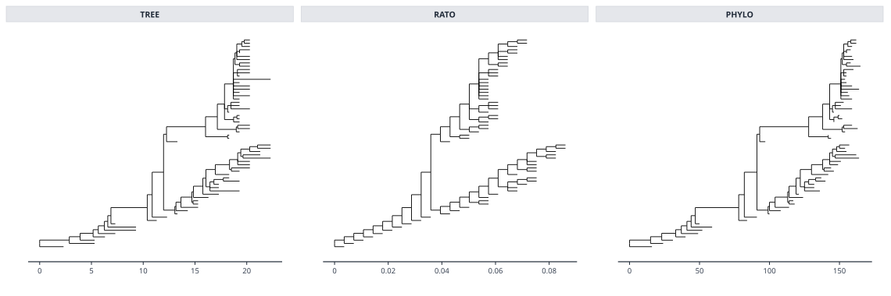
▶ Show / Hide Python Code read_r8sggtreefacet_wraptheme_tree2
from ggtree import facet_wrap, ggtree, read_r8s, system_file, theme_tree2
r8s = read_r8s(system_file("extdata", "r8s", "H3_r8s_output.log"))
ggtree(r8s) + facet_wrap("~.id", scales="free") + theme_tree2()
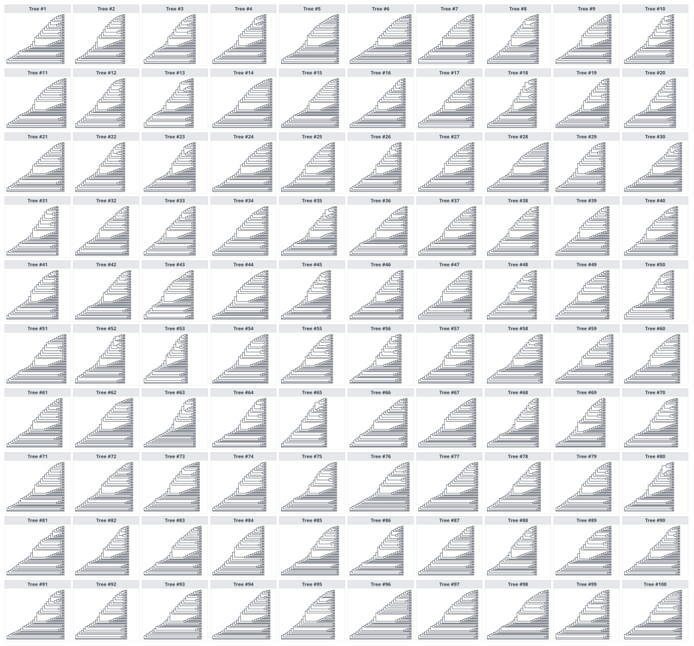
▶ Show / Hide Python Code read_treeggtreefacet_wrap
from ggtree import facet_wrap, ggtree, read_tree, system_file
btrees = read_tree(system_file("extdata", "RAxML", "RAxML_bootstrap.H3"))
ggtree(btrees) + facet_wrap("~.id", ncol=10)
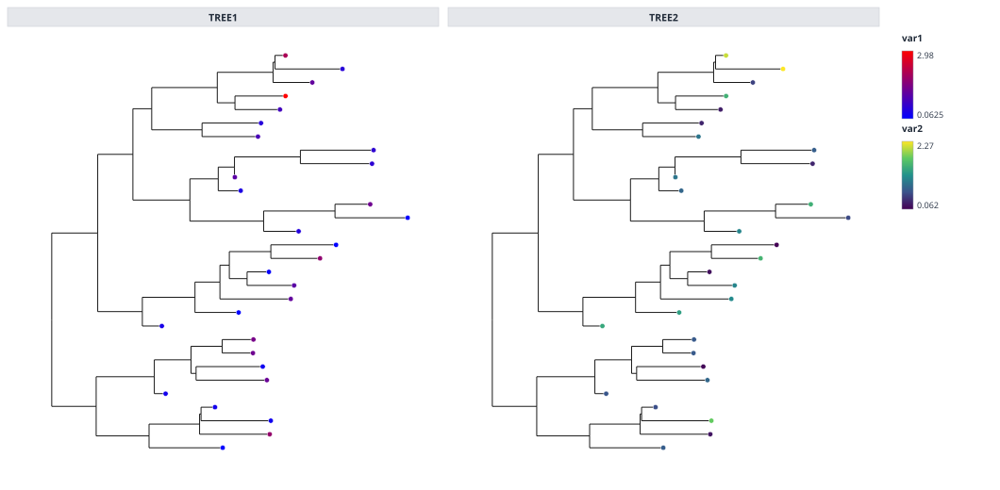
▶ Show / Hide Python Code TreeDataListfacet_wrapgeom_tippointtd_filter
import numpy as np
from ggtree import (
DataFrame,
TreeDataList,
aes,
facet_wrap,
full_join,
geom_tippoint,
ggtree,
new_scale_colour,
rtree,
scale_colour_gradient,
scale_colour_viridis_c,
set_seed,
td_filter,
)
set_seed(2020)
rng = np.random.default_rng(2020)
x = rtree(30)
d = DataFrame(
{
"label": x.tip_label,
"var1": np.abs(rng.normal(size=30)).tolist(),
"var2": np.abs(rng.normal(size=30)).tolist(),
}
)
tree = full_join(x, d, by="label")
trs = TreeDataList({"TREE1": tree, "TREE2": tree})
return (
ggtree(trs)
+ facet_wrap("~.id")
+ geom_tippoint(aes(subset='.id == "TREE1"', colour="var1"))
+ scale_colour_gradient(low="blue", high="red")
+ new_scale_colour()
+ geom_tippoint(aes(colour="var2"), data=td_filter('.id == "TREE2"'))
+ scale_colour_viridis_c()
)

▶ Show / Hide Python Code read_treeggdensitreegeom_tiplabhexpand
from ggtree import geom_tiplab, ggdensitree, hexpand, read_tree, system_file
btrees = read_tree(system_file("extdata", "RAxML", "RAxML_bootstrap.H3"))
return (
ggdensitree(btrees, alpha=0.3, colour="steelblue")
+ geom_tiplab(size=3)
+ hexpand(0.35)
)

▶ Show / Hide Python Code read_nhxggtreegeom_tiplabgeom_label
from ggtree import aes, geom_label, geom_text, geom_tiplab, ggtree, read_nhx
treetext = (
"(((ADH2:0.1[&&NHX:S=human], ADH1:0.11[&&NHX:S=human]):"
"0.05[&&NHX:S=primates:D=Y:B=100],ADHY:"
"0.1[&&NHX:S=nematode],ADHX:0.12[&&NHX:S=insect]):"
"0.1[&&NHX:S=metazoa:D=N],(ADH4:0.09[&&NHX:S=yeast],"
"ADH3:0.13[&&NHX:S=yeast], ADH2:0.12[&&NHX:S=yeast],"
"ADH1:0.11[&&NHX:S=yeast]):0.1[&&NHX:S=Fungi])[&&NHX:D=N];"
)
tree = read_nhx(text=treetext)
return (
ggtree(tree)
+ geom_tiplab()
+ geom_label(aes(x="branch", label="S"), fill="lightgreen")
+ geom_label(aes(label="D"), fill="steelblue")
+ geom_text(aes(label="B"), hjust=-0.5)
)

▶ Show / Hide Python Code ggtreegeom_cladelabxlimplot_list
from ggtree import geom_cladelab, ggtree, plot_list, rtree, set_seed, xlim
set_seed(2015 - 12 - 21)
tree = rtree(30)
p = ggtree(tree) + xlim(None, 8)
p1 = (
p
+ geom_cladelab(node=45, label="test label")
+ geom_cladelab(node=34, label="another clade")
)
p2 = (
p
+ geom_cladelab(node=45, label="test label", align=True, offset=0.2, textcolor="red", barcolor="red")
+ geom_cladelab(node=34, label="another clade", align=True, offset=0.2, textcolor="blue", barcolor="blue")
)
p3 = (
p
+ geom_cladelab(
node=45,
label="test label",
align=True,
angle=270,
hjust="center",
offset_text=0.5,
barsize=1.5,
fontsize=8,
)
+ geom_cladelab(node=34, label="another clade", align=True, angle=45)
)
p4 = p + geom_cladelab(node=34, label="another clade", align=True, geom="label", fill="lightblue")
plot_list(p1, p2, p3, p4, ncol=2, tag_levels="A")

▶ Show / Hide Python Code DataFramegeom_cladelabaesggtree
from ggtree import DataFrame, aes, geom_cladelab, ggtree, plot_list, rtree, set_seed, xlim
set_seed(2015 - 12 - 21)
tree = rtree(30)
p = ggtree(tree) + xlim(None, 8)
dat = DataFrame({"node": [45, 34], "name": ["test label", "another clade"]})
p1 = p + geom_cladelab(
data=dat,
mapping=aes(node="node", label="name", color="name"),
fontsize=3,
)
dt = DataFrame(
{
"node": [45, 34],
"image": [
"7fb9bea8-e758-4986-afb2-95a2c3bf983d",
"0174801d-15a6-4668-bfe0-4c421fbe51e8",
],
"name": ["specie A", "specie B"],
}
)
p2 = p + geom_cladelab(
data=dt,
mapping=aes(node="node", label="name", image="image"),
geom="phylopic",
imagecolor="black",
offset=1,
offset_text=0.5,
)
p3 = p + geom_cladelab(
data=dt,
mapping=aes(node="node", label="name", image="image", color="name"),
geom="phylopic",
offset=1,
offset_text=0.5,
)
plot_list(p1, p2, p3, ncol=3, tag_levels="A")
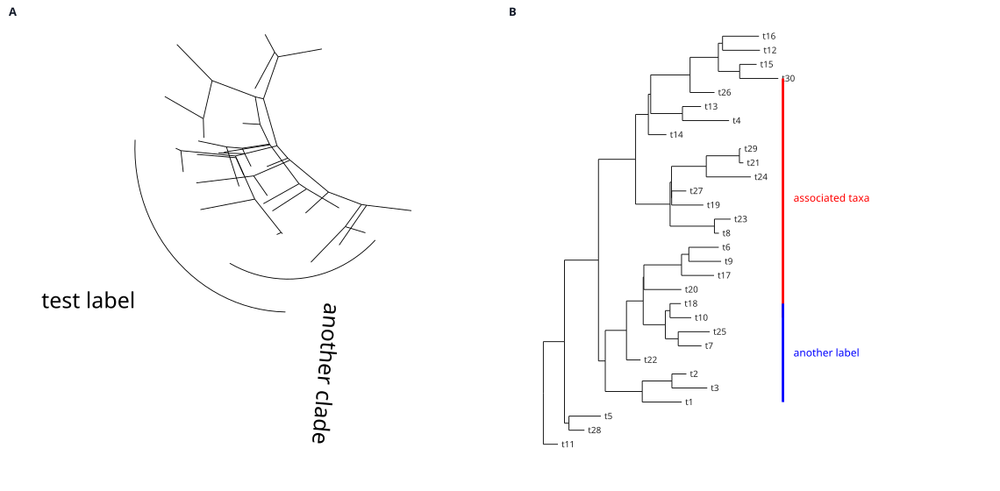
▶ Show / Hide Python Code ggtreegeom_cladelabgeom_stripgeom_tiplab
from ggtree import (
geom_cladelab,
geom_strip,
geom_tiplab,
ggtree,
plot_list,
rtree,
set_seed,
xlim,
)
set_seed(2015 - 12 - 21)
tree = rtree(30)
p = ggtree(tree) + xlim(None, 8)
p1 = (
ggtree(tree, layout="daylight")
+ geom_cladelab(node=35, label="test label", angle=0, fontsize=8, offset=0.5, vjust=0.5)
+ geom_cladelab(node=55, label="another clade", angle=-95, hjust=0.5, fontsize=8)
)
p2 = (
p
+ geom_tiplab()
+ geom_strip("t10", "t30", barsize=2, color="red", label="associated taxa", offset_text=0.1)
+ geom_strip("t1", "t18", barsize=2, color="blue", label="another label", offset_text=0.1)
)
plot_list(p1, p2, ncol=2, tag_levels="A")

▶ Show / Hide Python Code ggtreegeom_hilightgeom_balanceread_nhx
from ggtree import (
DataFrame,
aes,
geom_balance,
geom_hilight,
ggtree,
plot_list,
read_nhx,
read_tree,
rtree,
scale_fill_manual,
set_seed,
system_file,
)
nwk = system_file("extdata", "sample.nwk")
tree = read_tree(nwk)
p1 = (
ggtree(tree)
+ geom_hilight(node=21, fill="steelblue", alpha=0.6)
+ geom_hilight(node=17, fill="darkgreen", alpha=0.6)
)
p2 = (
ggtree(tree, layout="circular")
+ geom_hilight(node=21, fill="steelblue", alpha=0.6)
+ geom_hilight(node=23, fill="darkgreen", alpha=0.6)
)
set_seed(2015 - 12 - 21)
pg = ggtree(rtree(30), layout="daylight")
p3 = (
pg
+ geom_hilight(node=55, linetype=3)
+ geom_hilight(node=35, fill="darkgreen", type="rect")
)
p4 = (
ggtree(tree)
+ geom_balance(node=16, fill="steelblue", color="white", alpha=0.6, extend=1)
+ geom_balance(node=19, fill="darkgreen", color="white", alpha=0.6, extend=1)
)
d = DataFrame({"node": [17, 21], "type": ["A", "B"]})
p5 = ggtree(tree) + geom_hilight(data=d, mapping=aes(node="node", fill="type"), type="roundrect")
x = read_nhx(system_file("extdata", "NHX", "ADH.nhx"))
p6 = (
ggtree(x)
+ geom_hilight(
mapping=aes(subset="node in (10, 12)", fill="S"),
type="gradient",
gradient_direction="rt",
alpha=0.8,
)
+ scale_fill_manual(values=["steelblue", "darkgreen"])
)
plot_list(p1, p2, p3, p4, p5, p6, ncol=3, tag_levels="A")

▶ Show / Hide Python Code ggtreegeom_taxalinkgeom_tiplabscale_size_continuous
from ggtree import (
DataFrame,
aes,
geom_taxalink,
geom_tiplab,
ggtree,
plot_list,
read_tree,
scale_size_continuous,
system_file,
)
tree = read_tree(system_file("extdata", "sample.nwk"))
p1 = (
ggtree(tree)
+ geom_tiplab()
+ geom_taxalink(taxa1="A", taxa2="E")
+ geom_taxalink(taxa1="F", taxa2="K", color="red", linetype="dashed", arrow=True)
)
p2 = (
ggtree(tree, layout="circular")
+ geom_taxalink(taxa1="A", taxa2="E", color="grey", alpha=0.5, offset=0.05, arrow=True)
+ geom_taxalink(taxa1="F", taxa2="K", color="red", linetype="dashed", alpha=0.5, offset=0.05, arrow=True)
+ geom_taxalink(taxa1="L", taxa2="M", color="blue", alpha=0.5, offset=0.05, hratio=0.8, arrow=True)
+ geom_tiplab()
)
p3 = (
ggtree(tree, layout="inward_circular", xlim=150)
+ geom_taxalink(taxa1="A", taxa2="E", color="grey", alpha=0.5, offset=-0.2, outward=False, arrow=True)
+ geom_taxalink(taxa1="F", taxa2="K", color="red", linetype="dashed", alpha=0.5, offset=-0.2, outward=False, arrow=True)
+ geom_taxalink(taxa1="L", taxa2="M", color="blue", alpha=0.5, offset=-0.2, outward=False, arrow=True)
+ geom_tiplab(hjust=1)
)
dat = DataFrame(
{
"from": ["A", "F", "L"],
"to": ["E", "K", "M"],
"h": [1, 1, 0.1],
"type": ["t1", "t2", "t3"],
"s": [2, 1, 2],
}
)
p4 = (
ggtree(tree, layout="inward_circular", xlim=(150, 0))
+ geom_taxalink(
data=dat,
mapping=aes(taxa1="from", taxa2="to", color="type", size="s"),
offset=0.15,
)
+ geom_tiplab(hjust=1)
+ scale_size_continuous(range=(1, 3))
)
plot_list(p1, p2, p3, p4, ncol=2, tag_levels="A")
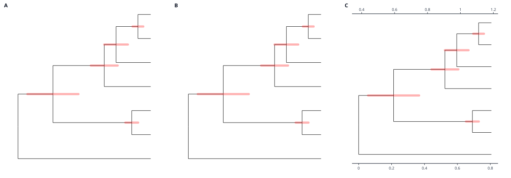
▶ Show / Hide Python Code read_megaggtreegeom_rangescale_x_range
from ggtree import (
geom_range,
ggtree,
plot_list,
read_mega,
scale_x_range,
system_file,
theme_tree2,
)
megafile = system_file("extdata", "MEGA7", "mtCDNA_timetree.nex")
x = read_mega(megafile)
p1 = ggtree(x) + geom_range("reltime_0.95_CI", color="red", size=3, alpha=0.3)
p2 = ggtree(x) + geom_range("reltime_0.95_CI", color="red", size=3, alpha=0.3, center="reltime")
p3 = p2 + scale_x_range() + theme_tree2()
plot_list(p1, p2, p3, ncol=3, tag_levels="A")

▶ Show / Hide Python Code read_beastggtreegeom_rangegeom_nodelab
from ggtree import (
aes,
geom_nodelab,
geom_range,
ggtree,
read_beast,
scale_color_continuous,
system_file,
theme,
)
beast_file = system_file("extdata", "BEAST", "beast_mcc.tree")
beast = read_beast(beast_file)
return (
ggtree(beast, aes(color="rate"))
+ geom_range(range="length_0.95_HPD", color="red", alpha=0.6, size=2)
+ geom_nodelab(aes(x="branch", label="round(posterior, 2)"), vjust=-0.5, size=3)
+ scale_color_continuous(low="darkgreen", high="red")
+ theme(legend_position=(0.1, 0.8))
)

▶ Show / Hide Python Code read_hyphyggtreegeom_textaes
from ggtree import aes, geom_text, ggtree, read_hyphy, system_file
nwk = system_file("extdata", "HYPHY", "labelledtree.tree")
ancseq = system_file("extdata", "HYPHY", "ancseq.nex")
tipfas = system_file("extdata", "pa.fas")
hy = read_hyphy(nwk, ancseq, tipfas)
return ggtree(hy) + geom_text(
aes(x="branch", label="AA_subs"),
size=2,
vjust=-0.3,
color="firebrick",
)
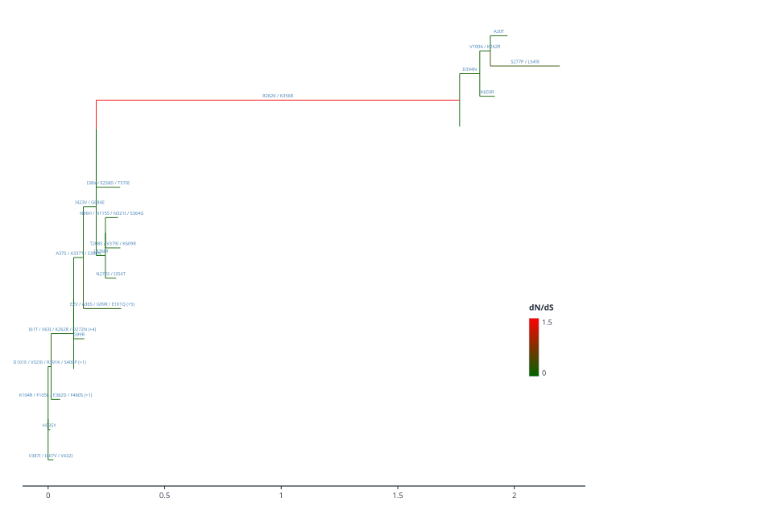
▶ Show / Hide Python Code read_codemlggtreescale_color_continuoussquish
from ggtree import (
aes,
geom_text,
ggtree,
read_codeml,
scale_color_continuous,
squish,
system_file,
theme_tree2,
)
rstfile = system_file("extdata", "treeio", "PAML_Codeml", "rst")
mlcfile = system_file("extdata", "treeio", "PAML_Codeml", "mlc")
ml = read_codeml(rstfile, mlcfile)
return (
ggtree(ml, aes(color="dN_vs_dS"), branch_length="dN_vs_dS")
+ scale_color_continuous(
name="dN/dS",
limits=(0, 1.5),
oob=squish,
low="darkgreen",
high="red",
)
+ geom_text(aes(x="branch", label="AA_subs"), vjust=-0.5, color="steelblue", size=2)
+ theme_tree2(legend_position=(0.9, 0.3))
)

▶ Show / Hide Python Code ggtreegeom_tiplabviewCladeMRCA
from ggtree import MRCA, geom_tiplab, ggtree, plot_list, read_tree, system_file, viewClade
nwk = system_file("extdata", "sample.nwk")
tree = read_tree(nwk)
p = ggtree(tree) + geom_tiplab()
p2 = viewClade(p, MRCA(p, "I", "L"))
plot_list(p, p2, ncol=2, tag_levels="A")

▶ Show / Hide Python Code groupCladeggtreescale_color_manualscaleClade
from ggtree import (
aes,
ggtree,
groupClade,
plot_list,
read_tree,
scaleClade,
scale_color_manual,
system_file,
theme,
)
nwk = system_file("extdata", "sample.nwk")
tree = read_tree(nwk)
tree2 = groupClade(tree, [17, 21])
p = (
ggtree(tree2, aes(color="group"))
+ theme(legend_position="none")
+ scale_color_manual(values=["black", "firebrick", "steelblue"])
)
p2 = scaleClade(p, node=17, scale=0.1)
plot_list(p, p2, ncol=2, tag_levels="A")
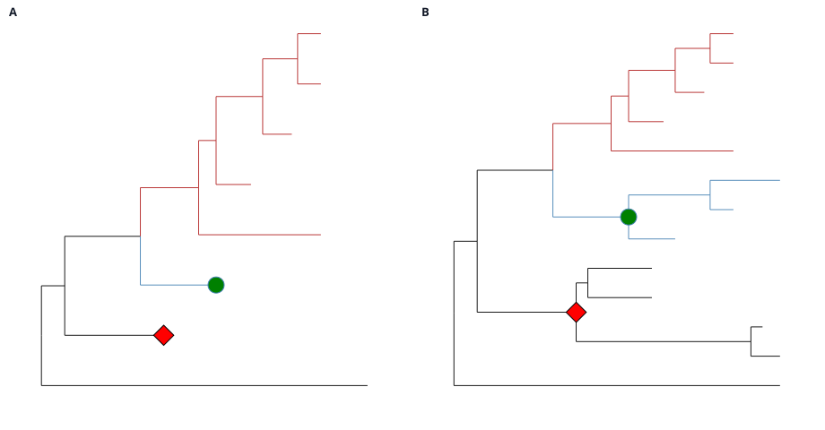
▶ Show / Hide Python Code collapseexpandgeom_point2groupClade
from ggtree import (
aes,
collapse,
expand,
geom_point2,
ggtree,
groupClade,
plot_list,
read_tree,
scale_color_manual,
system_file,
theme,
)
nwk = system_file("extdata", "sample.nwk")
tree = read_tree(nwk)
tree2 = groupClade(tree, [17, 21])
p = (
ggtree(tree2, aes(color="group"))
+ theme(legend_position="none")
+ scale_color_manual(values=["black", "firebrick", "steelblue"])
)
p2 = collapse(p, node=21) + geom_point2(aes(subset="node == 21"), shape=21, size=5, fill="green")
p2 = collapse(p2, node=23) + geom_point2(aes(subset="node == 23"), shape=23, size=5, fill="red")
p3 = expand(expand(p2, node=23), node=21)
plot_list(p2, p3, ncol=2, tag_levels="A")

▶ Show / Hide Python Code collapsescaleCladegeom_tiplabgroupClade
from ggtree import (
aes,
collapse,
expand,
geom_tiplab,
ggtree,
groupClade,
plot_list,
read_tree,
scaleClade,
scale_color_manual,
system_file,
theme,
)
nwk = system_file("extdata", "sample.nwk")
tree = read_tree(nwk)
tree2 = groupClade(tree, [17, 21])
p = (
ggtree(tree2, aes(color="group"))
+ theme(legend_position="none")
+ scale_color_manual(values=["black", "firebrick", "steelblue"])
)
p2 = p + geom_tiplab()
node = 21
pA = expand(collapse(p2, node, "max", fill="grey20", alpha=0.85), node)
pB = expand(collapse(p2, node, "min", fill="grey20", alpha=0.85), node)
pC = expand(collapse(p2, node, "mixed", fill="grey20", alpha=0.85), node)
pD = collapse(collapse(p, 21, "mixed", fill="steelblue", alpha=0.4), 23, "mixed", fill="firebrick", color="blue")
pE = collapse(scaleClade(p, 23, 0.2), 23, "min", fill="darkgreen")
plot_list(pA, pB, pC, pD, pE, ncol=3, tag_levels="A")

▶ Show / Hide Python Code DataFramedistbionjggtree
from ggtree import (
DataFrame,
aes,
bionj,
dist,
ggtree,
groupOTU,
system_file,
theme,
)
iris_path = system_file("extdata", "TDbook", "iris.tsv")
with open(iris_path, encoding="utf-8") as fh:
lines = [line.strip() for line in fh if line.strip()]
rows = [line.split("\t") for line in lines[1:]]
rn = [f"{r[4]}_{i}" for i, r in enumerate(rows, 1)]
df_iris = DataFrame(
{
"Sepal.Length": [float(r[0]) for r in rows],
"Sepal.Width": [float(r[1]) for r in rows],
"Petal.Length": [float(r[2]) for r in rows],
"Petal.Width": [float(r[3]) for r in rows],
},
index=rn,
)
d_iris = dist(df_iris, method="man")
tree_iris = bionj(d_iris)
grp = {
"setosa": rn[:50],
"versicolor": rn[50:100],
"virginica": rn[100:150],
}
p_iris = ggtree(tree_iris, layout="circular", branch_length="none")
groupOTU(p_iris, grp, "Species") + aes(color="Species") + theme(legend_position="right")
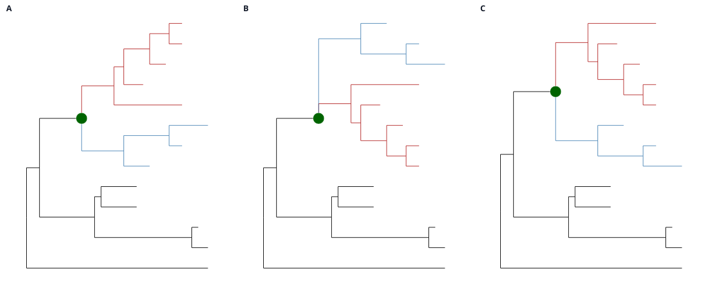
▶ Show / Hide Python Code groupCladegeom_point2rotateflip
from ggtree import (
aes,
flip,
geom_point2,
ggtree,
groupClade,
plot_list,
read_tree,
rotate,
scale_color_manual,
system_file,
theme,
)
nwk = system_file("extdata", "sample.nwk")
tree = read_tree(nwk)
tree2 = groupClade(tree, [17, 21])
p = (
ggtree(tree2, aes(color="group"))
+ theme(legend_position="none")
+ scale_color_manual(values=["black", "firebrick", "steelblue"])
)
p1 = p + geom_point2(aes(subset="node == 16"), color="darkgreen", size=5)
p2 = rotate(p1, 16)
p3 = flip(p2, 17, 21)
plot_list(p1, p2, p3, ncol=3, tag_levels="A")

▶ Show / Hide Python Code open_treegeom_tiplabgroupCladeggtree
from ggtree import (
aes,
geom_tiplab,
ggtree,
groupClade,
open_tree,
read_tree,
scale_color_manual,
system_file,
theme,
)
nwk = system_file("extdata", "sample.nwk")
tree = read_tree(nwk)
tree2 = groupClade(tree, [17, 21])
p = (
ggtree(tree2, aes(color="group"))
+ theme(legend_position="none")
+ scale_color_manual(values=["black", "firebrick", "steelblue"])
)
open_tree(p, 180) + geom_tiplab()

▶ Show / Hide Python Code open_treerotate_treegeom_tiplabggtree
from ggtree import (
aes,
geom_tiplab,
ggtree,
groupClade,
open_tree,
read_tree,
rotate_tree,
scale_color_manual,
system_file,
theme,
)
nwk = system_file("extdata", "sample.nwk")
tree = read_tree(nwk)
tree2 = groupClade(tree, [17, 21])
p = (
ggtree(tree2, aes(color="group"))
+ theme(legend_position="none")
+ scale_color_manual(values=["black", "firebrick", "steelblue"])
)
p3 = open_tree(p, 180) + geom_tiplab()
rotate_tree(p3, 180)

▶ Show / Hide Python Code rtreeset_seedggtreegeom_tiplab
import random
from ggtree import (
aes,
geom_point2,
geom_tiplab,
ggtree,
plot_list,
rotate,
rtree,
set_seed,
)
set_seed(2016 - 5 - 29)
x = rtree(50)
p = ggtree(x) + geom_tiplab()
internal_nodes = sorted({int(v) for v in x.edge[:, 0]})
nn = random.Random(2016 - 5 - 29).sample(internal_nodes, 4)
pp = []
for n in nn:
pr = rotate(p, n) + geom_point2(aes(subset=f"node == {n}"), color="red", size=3)
pp.append(pr)
plot_list(*pp, ncol=4, tag_levels="A")

▶ Show / Hide Python Code rtreeset_seedggtreeopen_tree
from ggtree import ggtree, ggtitle, open_tree, plot_list, rtree, set_seed
set_seed(123)
tr = rtree(50)
p = ggtree(tr, layout="circular")
angles = [0, 54, 108, 162, 216, 270]
pp = [open_tree(p, angle=a) + ggtitle(f"open angle: {a}") for a in angles]
plot_list(*pp, ncol=3, tag_levels="A")
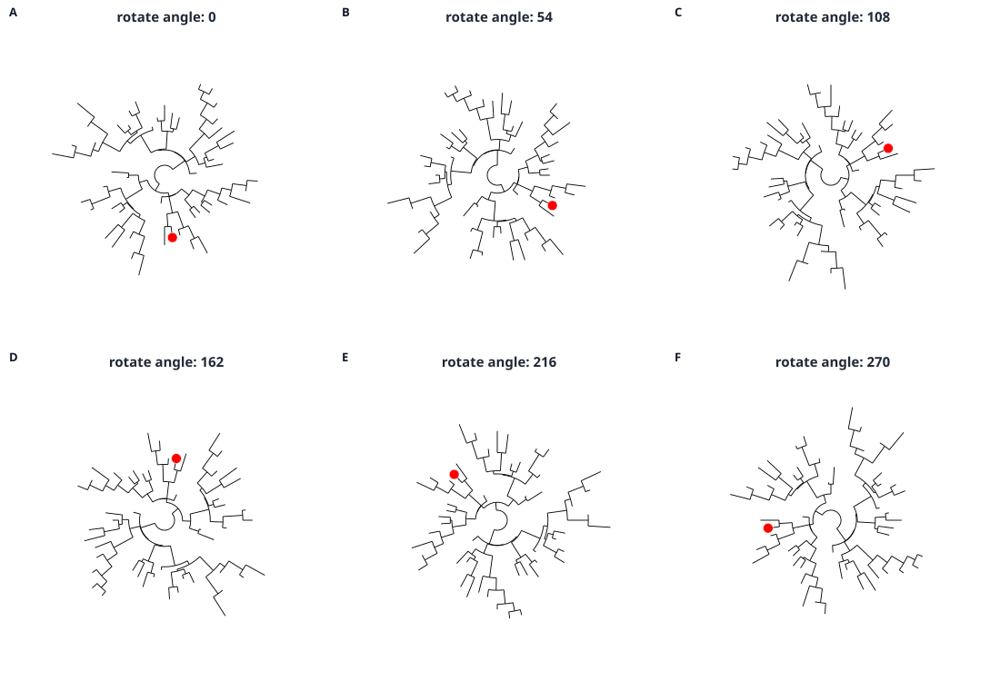
▶ Show / Hide Python Code rtreeset_seedggtreegeom_point2
from ggtree import aes, geom_point2, ggtree, ggtitle, plot_list, rotate_tree, rtree, set_seed
set_seed(123)
tr = rtree(50)
p = ggtree(tr, layout="circular") + geom_point2(aes(subset="node == 6"), color="red", size=3)
angles = [0, 54, 108, 162, 216, 270]
pp = [rotate_tree(p, angle=a) + ggtitle(f"rotate angle: {a}") for a in angles]
plot_list(*pp, ncol=3, tag_levels="A")

▶ Show / Hide Python Code read_treeread_table%<+%geom_tiplab
from ggtree import (
read_tree, read_table, system_file, ggtree, aes, xlim,
geom_tiplab, geom_tippoint, geom_label, scale_size_continuous,
scale_fill_gradientn,
)
tree = read_tree(system_file("extdata", "TDbook", "tree_boots.nwk"))
df_tip_data = read_table(system_file("extdata", "TDbook", "df_tip_data.tsv"), sep="\t", header=True)
df_inode_data = read_table(system_file("extdata", "TDbook", "df_inode_data.tsv"), sep="\t", header=True)
p = (
ggtree(tree) % df_tip_data
+ xlim(-0.45, 4.2)
+ geom_tiplab(offset=0.6, hjust=0.5)
+ geom_tippoint(aes(shape="trophic_habit", color="trophic_habit", size="mass_in_kg"))
+ scale_size_continuous(range=(3, 10))
)
p2 = (
p % df_inode_data
+ geom_label(aes(label="vernacularName.y", fill="posterior"), na_rm=True)
+ scale_fill_gradientn(colors=["#EDF8B1", "#7FCDBB", "#2C7FB8"])
)
p2
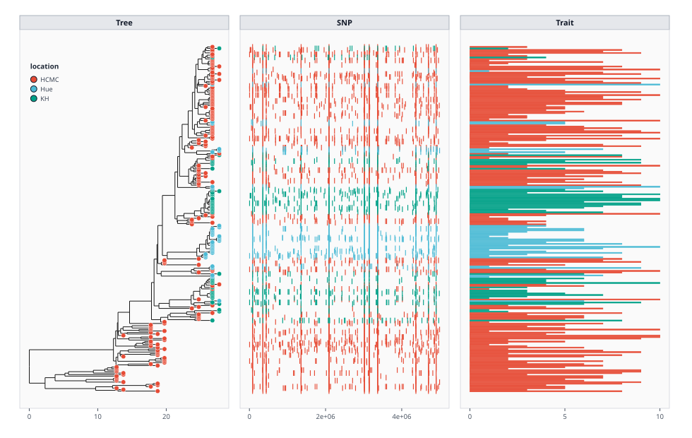
▶ Show / Hide Python Code read_treeread_tableDataFrameggtree
from ggtree import (
read_tree, read_table, DataFrame, system_file, ggtree, aes,
geom_tippoint, geom_facet, geom_point, geom_col, theme_tree2,
)
tree = read_tree(system_file("extdata", "TDbook", "tree_nwk.nwk"))
df_info = read_table(system_file("extdata", "TDbook", "df_info.tsv"), sep="\t", header=True)
df_alleles = read_table(system_file("extdata", "TDbook", "df_alleles.tsv"), sep="\t", header=True)
df_bar_data = read_table(system_file("extdata", "TDbook", "df_bar_data.tsv"), sep="\t", header=True)
recs = df_alleles.to_records()
cols = df_alleles.columns
strains = [str(recs[0][c]) for c in cols]
tip_set = set(tree.tip_label)
c_ref = cols[0]
snp_id, snp_pos = [], []
for r_idx, pos_str in enumerate(df_alleles.rownames[1:], 1):
row = recs[r_idx]
ref_base = row[c_ref]
if ref_base == "?":
continue
pos_val = int(pos_str)
for c, strain in zip(cols[1:], strains[1:]):
val = row[c]
if strain in tip_set and val != "?" and val != ref_base:
snp_id.append(strain)
snp_pos.append(pos_val)
snp_data = DataFrame({"id": snp_id, "pos": snp_pos})
p = (
ggtree(tree) % df_info
+ geom_tippoint(aes(color="location"), size=1.8)
+ geom_facet(panel="SNP", data=snp_data, geom=geom_point, mapping=aes(x="pos", color="location"), shape="|")
+ geom_facet(panel="Trait", data=df_bar_data, geom=geom_col, mapping=aes(x="dummy_bar_value", color="location", fill="location"), orientation="y", width=0.6)
+ theme_tree2(legend_position=(0.05, 0.85))
)
p

▶ Show / Hide Python Code read_beastread_tablegheatmapscale_fill_manual
from ggtree import (
read_beast, read_table, system_file, ggtree, geom_treescale,
geom_tiplab, gheatmap, scale_fill_manual, scale_x_ggtree,
theme_tree2, plot_list,
)
beast_tree = read_beast(system_file("extdata", "MCC_FluA_H3.tree"))
genotype = read_table(system_file("extdata", "Genotype.txt"), sep="\t", header=True, row_names=0)
p = ggtree(beast_tree, mrsd="2013-01-01") + geom_treescale(x=2008, y=1, offset=2) + geom_tiplab(size=2)
p1 = (
gheatmap(p, genotype, offset=5, width=0.5, font_size=3, colnames_angle=-45, hjust=0)
+ scale_fill_manual(
breaks=["HuH3N2", "pdm", "trig"],
values=["steelblue", "firebrick", "darkgreen"],
name="genotype",
)
)
p_b = ggtree(beast_tree, mrsd="2013-01-01") + geom_tiplab(size=2, align=True, linesize=0.5) + theme_tree2()
p2 = gheatmap(p_b, genotype, offset=8, width=0.6, colnames=False) + scale_x_ggtree()
plot_list(p1, p2, ncol=1, tag_levels="A")

▶ Show / Hide Python Code read_treegheatmapnew_scale_fillscale_fill_viridis_d
from ggtree import (
set_seed, read_tree, DataFrame, sample, rnorm, system_file,
ggtree, gheatmap, new_scale_fill, scale_fill_viridis_d, scale_fill_viridis_c,
)
set_seed(2019)
tr = read_tree(system_file("extdata", "sample.nwk"))
ntip = len(tr.tip_label)
df = DataFrame(
{
"first": sample(list("abcdef"), ntip, replace=True),
"second": sample(list("xyz"), ntip, replace=True),
},
rownames=tr.tip_label,
)
df2 = DataFrame(
{
"A": rnorm(ntip),
"B": rnorm(ntip),
"C": rnorm(ntip),
},
rownames=tr.tip_label,
)
circ = ggtree(tr, layout="circular")
p1 = (
gheatmap(circ, df, offset=0.8, width=0.2, colnames_angle=95, colnames_offset_y=0.25)
+ scale_fill_viridis_d(option="D", name="discrete\nvalue")
)
p2 = (
gheatmap(p1 + new_scale_fill(), df2, offset=15, width=0.3, colnames_angle=90, colnames_offset_y=0.25)
+ scale_fill_viridis_c(option="A", name="continuous\nvalue")
)
p2
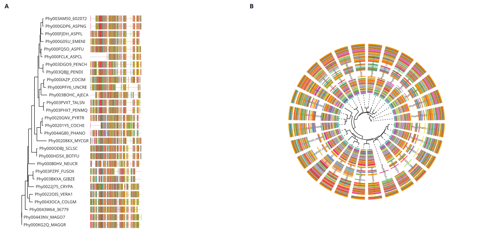
▶ Show / Hide Python Code read_treemsaplotggtreegeom_tiplab
from ggtree import read_tree, system_file, ggtree, geom_tiplab, msaplot, xlim, plot_list
tree = read_tree(system_file("extdata", "TDbook", "tree_seq_nwk.nwk"))
fasta = system_file("extdata", "TDbook", "AA_sequence.fas")
p1 = msaplot(ggtree(tree) + geom_tiplab(size=2.3) + xlim(None, 26), fasta, offset=6.4, width=2)
p2 = msaplot(
ggtree(tree, layout="circular") + geom_tiplab(align=True, offset=3.2, size=1.9) + xlim(None, 16),
fasta,
offset=0.4,
width=2.4,
window=(120, 200),
)
plot_list(p1, p2, ncol=2, tag_levels="A")
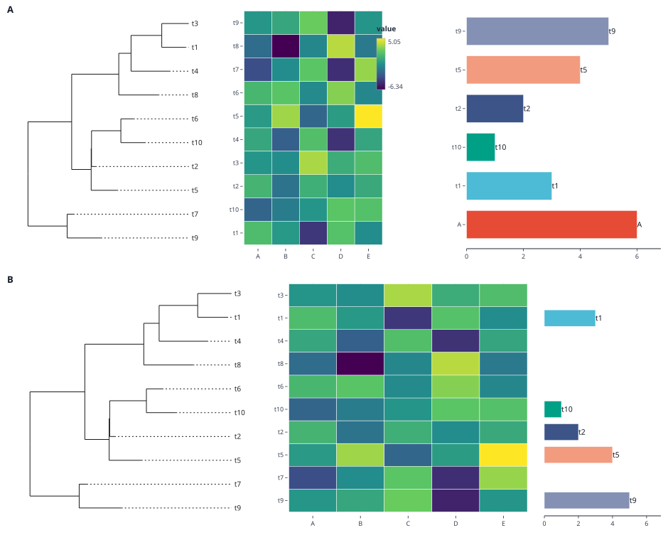
▶ Show / Hide Python Code rtreeggplotgeom_tilegeom_col
from ggtree import (
set_seed, rtree, sample, rnorm, rep, DataFrame, ggplot, ggtree, aes,
geom_tiplab, geom_tile, geom_col, geom_text, coord_flip, scale_fill_viridis_c,
theme_minimal, theme_tree2, theme, xlab, ylab, plot_grid, plot_list,
)
set_seed(20191031)
x = rtree(10)
d1 = DataFrame({"id": sample(x.tip_label, 5) + ["A"], "val": list(range(1, 7))})
g = ggtree(x) + geom_tiplab(align=True)
p1 = (
ggplot(d1, aes("id", "val"))
+ geom_col(aes(fill="id"))
+ geom_text(aes(label="id"), hjust=-0.1)
+ coord_flip()
+ theme_tree2()
+ theme(legend_position="none")
)
d2 = DataFrame({
"id": rep(x.tip_label, 5),
"category": rep(["A", "B", "C", "D", "E"], each=10),
"value": rnorm(50, mean=0.0, sd=2.5),
})
p2 = (
ggplot(d2, aes(x="category", y="id"))
+ geom_tile(aes(fill="value"))
+ scale_fill_viridis_c()
+ theme_minimal()
+ xlab(None)
+ ylab(None)
)
pa = plot_grid(g, p2, p1, ncol=3)
pb = p2.insert_left(g).insert_right(p1, width=0.5)
plot_list(pa, pb, ncol=1, tag_levels="A")

▶ Show / Hide Python Code read_treegeom_tiplabgeom_imageDataFrame
from ggtree import read_tree, DataFrame, system_file, ggtree, aes, geom_tiplab, geom_image, xlim, ylim
nwk = "((((bufonidae, dendrobatidae), ceratophryidae), (centrolenidae, leptodactylidae)), hylidae);"
imgdir = system_file("extdata", "frogs")
x = read_tree(text=nwk)
df = DataFrame({"label": x.tip_label, "img": [f"{imgdir}/{t}.jpg" for t in x.tip_label]})
p = (
ggtree(x) % df
+ xlim(None, 7)
+ ylim(None, 6.2)
+ geom_tiplab(aes(image="img"), geom="image", offset=2, align=2, size=0.2)
+ geom_tiplab(geom="label", offset=1, hjust=0.5)
+ geom_image(x=0.8, y=5.5, image=f"{imgdir}/frog.jpg", size=0.2)
)
p
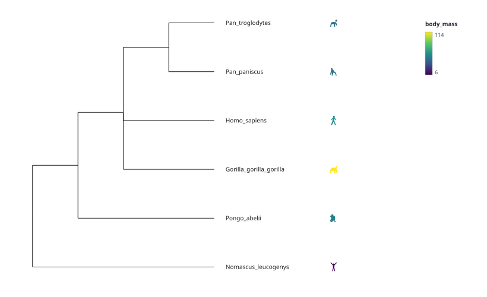
▶ Show / Hide Python Code read_treephylopic_uidgeom_tiplabscale_color_viridis_c
from ggtree import read_tree, phylopic_uid, ggtree, aes, geom_tiplab, xlim, scale_color_viridis_c
newick = (
"((Pongo_abelii,(Gorilla_gorilla_gorilla,(Pan_paniscus,"
"Pan_troglodytes)Pan,Homo_sapiens)Homininae)Hominidae,"
"Nomascus_leucogenys)Hominoidea;"
)
tree = read_tree(text=newick)
d = phylopic_uid(tree.tip_label)
d["body_mass"] = [52, 114, 47, 45, 58, 6]
p = (
ggtree(tree) % d
+ geom_tiplab(aes(image="uid", colour="body_mass"), geom="phylopic", offset=2.5, size=6.5)
+ geom_tiplab(aes(label="label"), offset=0.2)
+ xlim(None, 7)
+ scale_color_viridis_c()
)
p

▶ Show / Hide Python Code getStatesacenodebarnodepie
from ggtree import (
read_tree, DataFrame, system_file, getStates, ace, nodebar, nodepie,
ggtree, aes, geom_tiplab, geom_tippoint, geom_inset, scale_color_manual,
xlim, theme, plot_list,
)
anoletree = read_tree(system_file("extdata", "TDbook", "anoletree.nwk"))
x = getStates(anoletree, "tips")
cols = {"CG": "black", "GB": "#DF536B", "TC": "#61D04F", "TG": "#2297E6", "Tr": "#28E2E5", "Tw": "#CD0BBC"}
fitER = ace(x, anoletree, model="ER", type="discrete")
ancstats = fitER.lik_anc.copy()
ancstats["node"] = [int(r) for r in fitER.lik_anc.rownames]
bars = nodebar(ancstats, cols=fitER.states, color=cols, position="stack")
pies = nodepie(ancstats, cols=fitER.states, color=cols)
stat_df = DataFrame({"label": list(x.keys()), "stat": list(x.values())})
p_left = (
ggtree(anoletree) % stat_df
+ geom_tiplab(size=2.0)
+ geom_tippoint(aes(color="stat"), show_legend=False)
+ scale_color_manual(values=cols)
+ theme(legend_position="none")
+ xlim(None, 8)
)
p1 = p_left + geom_inset(bars, width=0.05, height=0.03, x="branch", show_legend=False)
p_right = (
ggtree(anoletree) % stat_df
+ geom_tiplab(size=2.0)
+ geom_tippoint(aes(color="stat"))
+ scale_color_manual(values=cols)
+ theme(legend_position="right")
+ xlim(None, 8)
)
p2 = p_right + geom_inset(pies, width=0.055, height=0.055)
plot_list(p1, p2, ncol=2, tag_levels="A")
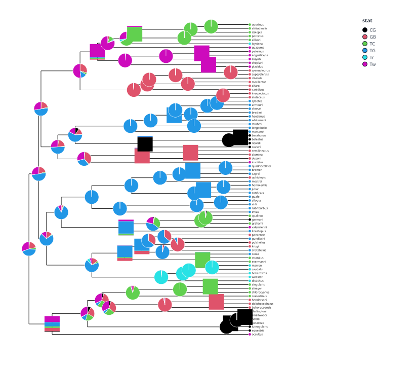
▶ Show / Hide Python Code getStatesacenodebarnodepie
from ggtree import (
set_seed, sample, read_tree, DataFrame, system_file, getStates, ace,
nodebar, nodepie, ggtree, aes, geom_tiplab, geom_tippoint, geom_inset,
scale_color_manual, xlim, theme,
)
set_seed(84)
anoletree = read_tree(system_file("extdata", "TDbook", "anoletree.nwk"))
x = getStates(anoletree, "tips")
cols = {"CG": "black", "GB": "#DF536B", "TC": "#61D04F", "TG": "#2297E6", "Tr": "#28E2E5", "Tw": "#CD0BBC"}
fitER = ace(x, anoletree, model="ER", type="discrete")
ancstats = fitER.lik_anc.copy()
ancstats["node"] = [int(r) for r in fitER.lik_anc.rownames]
bars = nodebar(ancstats, cols=fitER.states, color=cols, position="stack")
pies = nodepie(ancstats, cols=fitER.states, color=cols)
pies_and_bars = dict(pies)
for k in sample(list(pies.keys()), 20):
pies_and_bars[k] = bars[k]
stat_df = DataFrame({"label": list(x.keys()), "stat": list(x.values())})
p = (
ggtree(anoletree) % stat_df
+ geom_tiplab(size=2.0)
+ geom_tippoint(aes(color="stat"))
+ scale_color_manual(values=cols)
+ theme(legend_position="right")
+ xlim(None, 8)
)
p + geom_inset(pies_and_bars, width=0.055, height=0.04)
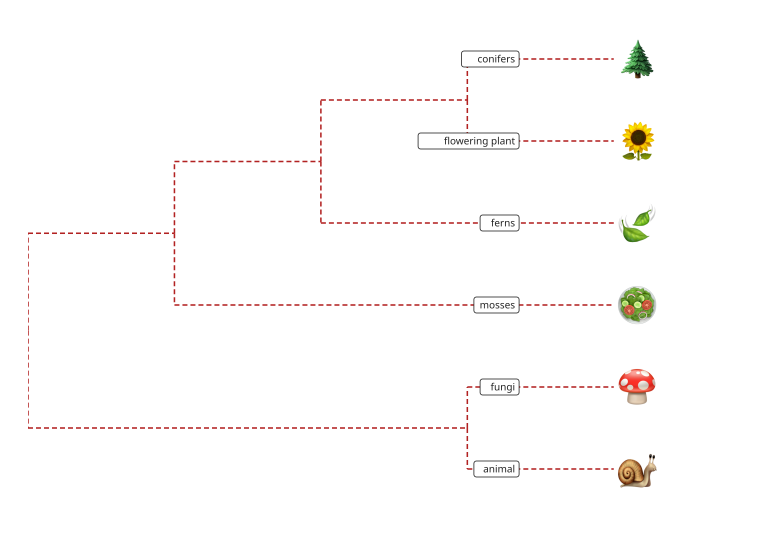
▶ Show / Hide Python Code read_treeggtreegeom_tiplabDataFrame
from ggtree import read_tree, DataFrame, ggtree, aes, geom_tiplab, xlim, ylim
tt = "((snail,mushroom),(((sunflower,evergreen_tree),leaves),green_salad));"
tree = read_tree(text=tt)
d = DataFrame({
"label": ["snail", "mushroom", "sunflower", "evergreen_tree", "leaves", "green_salad"],
"group": ["animal", "fungi", "flowering plant", "conifers", "ferns", "mosses"],
})
p = (
ggtree(tree, linetype="dashed", size=1.1, color="firebrick") % d
+ xlim(0, 4.5)
+ ylim(0.5, 6.5)
+ geom_tiplab(parse="emoji", size=15, vjust=0.25)
+ geom_tiplab(aes(label="group"), geom="label", x=3.35, hjust=1)
)
p

▶ Show / Hide Python Code ggtreegeom_tiplabopen_treerotate_tree
from ggtree import read_tree, ggtree, geom_tiplab, open_tree, rotate_tree, plot_list
tt = "((snail,mushroom),(((sunflower,evergreen_tree),leaves),green_salad));"
tree = read_tree(text=tt)
pA = ggtree(tree, layout="circular", size=1) + geom_tiplab(parse="emoji", size=10, vjust=0.25)
pC = open_tree(pA, angle=200)
pB = rotate_tree(pC, -90)
plot_list(pA, pB, pC, design="AC\nBC", tag_levels="A")

▶ Show / Hide Python Code rtreegeom_cladelabscale_color_manualDataFrame
from ggtree import set_seed, rtree, DataFrame, ggtree, aes, geom_cladelab, scale_color_manual, xlim
set_seed(123)
tr = rtree(30)
dat = DataFrame({
"node": [39, 48, 55],
"name": ["chicken", "duck", "family"],
})
p = (
ggtree(tr)
+ xlim(None, 5.2)
+ geom_cladelab(
data=dat,
mapping=aes(node="node", label="name", color="name"),
parse="emoji",
fontsize=12,
align=True,
show_legend=False,
)
+ scale_color_manual(values={"chicken": "firebrick", "duck": "steelblue", "family": "darkkhaki"})
)
p
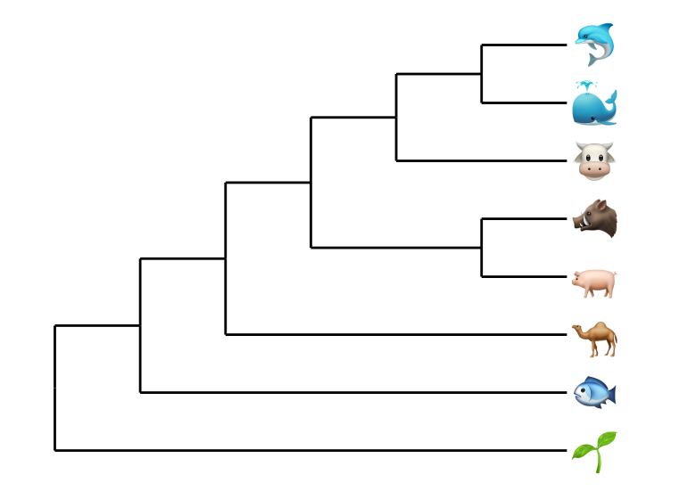
▶ Show / Hide Python Code read_treeggtreegeom_tiplabxlim
from ggtree import read_tree, ggtree, geom_tiplab, xlim, ylim
tree_text = "(((((cow, (whale, dolphin)), (pig2, boar)), camel), fish), seedling);"
x = read_tree(text=tree_text)
p = ggtree(x, size=2) + geom_tiplab(size=20, parse="emoji") + xlim(None, 7) + ylim(None, 8.5)
p

▶ Show / Hide Python Code phylo4phylo4dggtreegeom_tippoint
from ggtree import (
read_tree, read_table, system_file, DataFrame, seq, phylo4, phylo4d,
ggtree, aes, geom_tippoint, geom_text, geom_tiplab, scale_size_continuous,
xlim, theme, vexpand, gheatmap, hexpand, plot_list,
)
geospiza_tree = read_tree(system_file("extdata", "TDbook", "geospiza.nwk"))
geospiza_data = read_table(system_file("extdata", "TDbook", "geospiza_data.tsv"), sep="\t", header=True)
g1 = phylo4(geospiza_tree)
g2 = phylo4d(g1, geospiza_data)
d1 = DataFrame({"x": seq(1.1, 2.0, length_out=5), "lab": geospiza_data.columns})
p1 = (
ggtree(g2)
+ geom_tippoint(aes(size="wingL"), x=d1["x"][0], shape=1)
+ geom_tippoint(aes(size="tarsusL"), x=d1["x"][1], shape=1)
+ geom_tippoint(aes(size="culmenL"), x=d1["x"][2], shape=1)
+ geom_tippoint(aes(size="beakD"), x=d1["x"][3], shape=1)
+ geom_tippoint(aes(size="gonysW"), x=d1["x"][4], shape=1)
+ scale_size_continuous(range=(3, 12), name="")
+ geom_text(aes(x="x", y="0", label="lab"), data=d1, angle=45)
+ geom_tiplab(offset=1.3)
+ xlim(-0.1, 3.2)
+ theme(legend_position=(0.1, 0.75))
+ vexpand(0.14, -1)
+ vexpand(0.06, 1)
)
p2 = (
gheatmap(ggtree(g1), data=geospiza_data, colnames_angle=45, low="#00FF00", high="#FF1E00")
+ geom_tiplab(offset=1.0)
+ hexpand(0.2)
+ vexpand(0.14, -1)
+ vexpand(0.06, 1)
+ theme(legend_position=(0.1, 0.75))
)
plot_list(p1, p2, ncol=2, tag_levels="A")

▶ Show / Hide Python Code read_tableas_taxotaxo2phylogggtree
from ggtree import read_table, system_file, as_taxo, taxo2phylog, ggtree, geom_tiplab, geom_nodelab, hexpand
taxo_df = read_table(system_file("extdata", "TDbook", "taxo_eg.tsv"), sep="\t", header=True)
tax_phy = taxo2phylog(as_taxo(taxo_df))
p = ggtree(tax_phy) + geom_tiplab() + geom_nodelab(geom="label") + hexpand(0.12) + hexpand(0.14, -1)
p

▶ Show / Hide Python Code read_treeread_tablephyloseqggtree
from ggtree import (
read_tree, read_table, system_file, phyloseq, ggtree, aes,
geom_nodelab, geom_point, geom_tiplab, scale_size_continuous, log_trans,
theme, hexpand,
)
tr = read_tree(system_file("extdata", "TDbook", "GP_Chlamydiae.nwk"))
melted = read_table(system_file("extdata", "TDbook", "GP_Chlamydiae_melted.tsv"), sep="\t", header=True)
gp_chl = phyloseq(tr, melted_df=melted)
# Position genus labels cleanly past each tip's rightmost staggered sample dot
df_ps = gp_chl.fortify()
max_x_by_node = {}
for rec in df_ps.to_records():
if rec.get("isTip"):
nid = rec["node"]
xp = float(rec["x"]) + float(rec.get("hjust") or 0.0)
if nid not in max_x_by_node or xp > max_x_by_node[nid]:
max_x_by_node[nid] = xp
genus_df = df_ps[df_ps["isTip"]]
seen_nodes = set()
keep_idx = []
xs_g = []
for idx_r, rec in enumerate(genus_df.to_records()):
nid = rec["node"]
if nid not in seen_nodes:
seen_nodes.add(nid)
keep_idx.append(idx_r)
xs_g.append(max_x_by_node.get(nid, float(rec["x"])))
genus_sub = genus_df.iloc[keep_idx]
genus_sub["x_lbl"] = xs_g
p = (
ggtree(gp_chl)
+ geom_nodelab(aes(label="label"), hjust=-0.05, size=2.8)
+ geom_point(aes(x="x + hjust", color="SampleType", shape="Family", size="Abundance"), na_rm=True)
+ geom_tiplab(data=genus_sub, mapping=aes(x="x_lbl", y="y", label="Genus"), hjust=-0.12, size=2.9)
+ scale_size_continuous(trans=log_trans(5))
+ theme(legend_position="right")
+ hexpand(0.45)
)
p
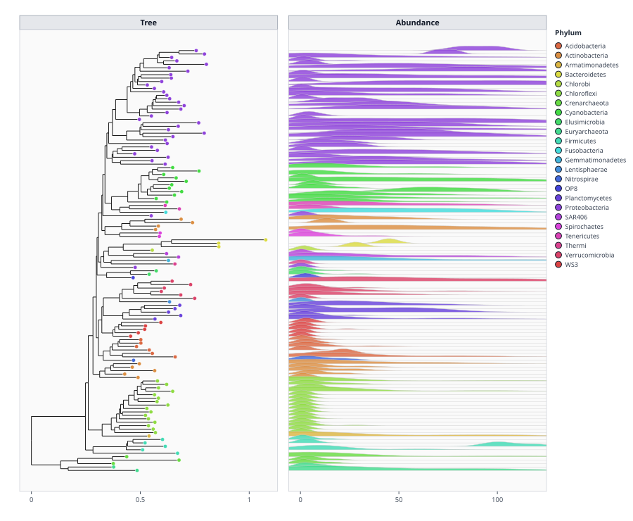
▶ Show / Hide Python Code read_treeread_tablephyloseqggtree
from ggtree import (
read_tree, read_table, DataFrame, system_file, phyloseq, ggtree, aes,
geom_tippoint, geom_facet, geom_density_ridges, guides, guide_legend,
)
tr = read_tree(system_file("extdata", "TDbook", "GP_merged_order.nwk"))
melted = read_table(system_file("extdata", "TDbook", "GP_merged_order_melted.tsv"), sep="\t", header=True)
merged_gp = phyloseq(tr, melted_df=melted, expand_samples=False)
recs_keep = [r for r in melted.to_records() if float(r["Abundance"]) < 120]
melt_simple = DataFrame({
"OTU": [r["OTU"] for r in recs_keep],
"val": [float(r["Abundance"]) for r in recs_keep],
})
p = (
ggtree(merged_gp)
+ geom_tippoint(aes(color="Phylum"), size=1.5)
+ geom_facet(
mapping=aes(x="val", group="label", fill="Phylum"),
data=melt_simple,
geom=geom_density_ridges,
panel="Abundance",
color="grey80",
lwd=0.3,
)
+ guides(color=guide_legend(ncol=1))
)
p

▶ Show / Hide Python Code read_tabledisthclustcutree
from ggtree import (
read_table, DataFrame, system_file, dist, hclust, cutree, MRCA,
groupClade, ggtree, aes, layout_dendrogram, geom_tippoint, geom_tiplab,
scale_color_brewer, theme_dendrogram, theme, margin,
)
mtcars = read_table(system_file("extdata", "TDbook", "mtcars.tsv"), sep="\t", header=True)
hc = hclust(dist(mtcars))
clus = cutree(hc, 4)
g = clus.groups()
p = ggtree(hc, linetype="dashed")
clades = [MRCA(p, tips) for _, tips in sorted(g.items())]
p = groupClade(p, clades, group_name="subtree") + aes(color="subtree")
d = DataFrame({"label": mtcars.rownames, "cyl": [int(v) for v in mtcars["cyl"]]})
p_out = (
(p % d)
+ layout_dendrogram()
+ geom_tippoint(aes(fill="factor(cyl)", x="x + 0.5"), size=5, shape=21, color="black")
+ geom_tiplab(aes(label="cyl", x="x + 0.5"), size=3, hjust=0.5, color="black")
+ geom_tiplab(angle=90, hjust=1, offset=-14, show_legend=False)
+ scale_color_brewer(palette="Set1", breaks=[1, 2, 3, 4])
+ theme_dendrogram(plot_margin=margin(6, 6, 85, 6))
+ theme(legend_position=(0.9, 0.6))
)
p_out
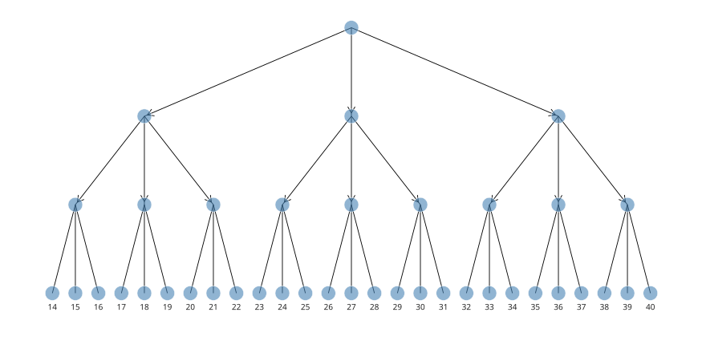
▶ Show / Hide Python Code graph_treeggtreearrowunit
from ggtree import graph_tree, ggtree, arrow, unit, rep, geom_point, geom_tiplab, layout_dendrogram
g = graph_tree(40, 3)
arrow_size = unit(rep([0, 3], times=[27, 13]), "mm")
p = (
ggtree(g, layout="slanted", arrow=arrow(length=arrow_size))
+ geom_point(size=5, color="steelblue", alpha=0.6)
+ geom_tiplab(hjust=0.5, vjust=2)
+ layout_dendrogram()
)
p

▶ Show / Hide Python Code read_tableDataFrameas_phyloggtree
import re
from ggtree import read_table, DataFrame, system_file, as_phylo, ggtree, aes, geom_tippoint, geom_tiplab, xlim
gni = read_table(system_file("extdata", "TDbook", "GNI2014.tsv"), sep="\t", header=True)
clean_cont = [re.sub(r"\s\(.*\)", "", str(v)) for v in gni["continent"]]
unique_cont = list(dict.fromkeys(clean_cont))
parents = clean_cont + ["World"] * len(unique_cont)
children = [str(v) for v in gni["iso3"]] + unique_cont
edgelist = DataFrame({"parent": parents, "child": children})
y = as_phylo(edgelist)
p = (
ggtree(y, layout="circular") % gni
+ aes(color="continent")
+ geom_tippoint(aes(size="population"), alpha=0.6)
+ geom_tiplab(aes(label="country"), offset=0.05, size=2.4)
+ xlim(None, 3.2)
)
p

▶ Show / Hide Python Code read_treeread_tableggtreeaes
from ggtree import (
system_file, read_tree, read_table, ggtree, aes, geom_tippoint,
rotate_tree, geom_fruit, geom_boxplot, scale_fill_discrete,
guide_legend, theme,
)
tree = read_tree(system_file("extdata", "TDbook", "tree_GlobalPatterns_order.nwk"))
tax = read_table(system_file("extdata", "TDbook", "df_GlobalPatterns_tax.tsv"))
melt_simple = read_table(system_file("extdata", "TDbook", "df_GlobalPatterns_melt.tsv"))
tax["OTU"] = [str(v) for v in tax["OTU"]]
melt_simple["OTU"] = [str(v) for v in melt_simple["OTU"]]
p = (
ggtree(tree, layout="fan", open_angle=10)
% tax
+ geom_tippoint(mapping=aes(color="Phylum"), size=1.5, show_legend=False)
)
p = rotate_tree(p, -90)
p = (
p
+ geom_fruit(
data=melt_simple,
geom=geom_boxplot,
mapping=aes(y="OTU", x="val", group="label", fill="Phylum"),
size=0.2,
outlier_size=0.5,
outlier_stroke=0.08,
outlier_shape=21,
axis_params={"axis": "x", "text_size": 1.8, "hjust": 1, "vjust": 0.5, "nbreak": 3},
grid_params={},
)
+ scale_fill_discrete(
name="Phyla",
guide=guide_legend(keywidth=0.8, keyheight=0.8, ncol=1),
)
+ theme(legend_title_size=9, legend_text_size=7)
)
p

▶ Show / Hide Python Code read_treeread_tablefactornodeid
import re
from ggtree import (
system_file, read_tree, read_table, factor, nodeid, DataFrame,
ggtree, aes, geom_hilight, geom_cladelab, geom_star,
scale_fill_manual, scale_starshape_manual, scale_size_continuous,
new_scale_fill, geom_fruit, geom_tile, geom_bar,
scale_alpha_continuous, geom_treescale, guide_legend, theme,
)
tree = read_tree(system_file("extdata", "TDbook", "tree_hmptree.nwk"))
dat1 = read_table(system_file("extdata", "TDbook", "df_tippoint.tsv"))
dat2 = read_table(system_file("extdata", "TDbook", "df_ring_heatmap.tsv"))
dat3 = read_table(system_file("extdata", "TDbook", "df_barplot_attr.tsv"))
site_levels = [
"Stool (prevalence)", "Cheek (prevalence)", "Plaque (prevalence)",
"Tongue (prevalence)", "Nose (prevalence)", "Vagina (prevalence)",
"Skin (prevalence)",
]
dat2["Sites"] = factor(dat2["Sites"], levels=site_levels)
dat3["Sites"] = factor(dat3["Sites"], levels=site_levels)
long_labs = [lb for lb in (tree.node_label or []) if lb and len(lb) > 4]
nodeids = nodeid(tree, long_labs)
nodelab = [re.sub(r"[.0-9]", "", lb) for lb in long_labs]
poslist = [
1.6, 1.4, 1.6, 0.8, 0.1, 0.25, 1.6, 1.6, 1.2, 0.4,
1.2, 1.8, 0.3, 0.8, 0.4, 0.3, 0.4, 0.4, 0.4, 0.6,
0.3, 0.4, 0.3,
]
nodedf = DataFrame({"node": nodeids})
labdf = DataFrame({"node": nodeids, "label": nodelab, "pos": poslist})
p = (
ggtree(tree, layout="fan", size=0.15, open_angle=5)
+ geom_hilight(
data=nodedf, mapping=aes(node="node"),
extendto=6.8, alpha=0.3, fill="grey", color="grey50", size=0.05,
)
+ geom_cladelab(
data=labdf, mapping=aes(node="node", label="label", offset_text="pos"),
hjust=0.5, angle="auto", barsize=0.0, horizontal=False,
fontsize=1.4, fontface="italic",
)
)
p = (
p % dat1
+ geom_star(
mapping=aes(fill="Phylum", starshape="Type", size="Size"),
starstroke=0.1,
)
+ scale_fill_manual(
values=[
"#FFC125", "#87CEFA", "#7B68EE", "#808080", "#800080",
"#9ACD32", "#D15FEE", "#FFC0CB", "#EE6A50", "#8DEEEE",
"#006400", "#800000", "#B0171F", "#191970",
],
guide=guide_legend(
keywidth=0.5, keyheight=0.5, order=1,
override_aes={"starshape": 15},
),
na_translate=False,
)
+ scale_starshape_manual(
values=[15, 1],
guide=guide_legend(keywidth=0.5, keyheight=0.5, order=2),
na_translate=False,
)
+ scale_size_continuous(
range=(1.0, 2.5),
guide=guide_legend(
keywidth=0.5, keyheight=0.5, order=3,
override_aes={"starshape": 15},
),
)
)
p = (
p
+ new_scale_fill()
+ geom_fruit(
data=dat2, geom=geom_tile,
mapping=aes(y="ID", x="Sites", alpha="Abundance", fill="Sites"),
color="grey50", offset=0.04, size=0.02,
)
+ scale_alpha_continuous(
range=(0.0, 1.0),
guide=guide_legend(keywidth=0.3, keyheight=0.3, order=5),
)
+ geom_fruit(
data=dat3, geom=geom_bar,
mapping=aes(y="ID", x="HigherAbundance", fill="Sites"),
pwidth=0.38, orientation="y", stat="identity",
)
+ scale_fill_manual(
values=["#0000FF", "#FFA500", "#FF0000", "#800000", "#006400", "#800080", "#696969"],
guide=guide_legend(keywidth=0.3, keyheight=0.3, order=4),
)
+ geom_treescale(fontsize=2.0, linesize=0.3, x=4.9, y=0.1)
+ theme(legend_position=(0.93, 0.5), legend_title_size=6.5, legend_text_size=4.5)
)
p

▶ Show / Hide Python Code layout_rectangulargeom_fruitgeom_tilegeom_bar
import re
from ggtree import (
system_file, read_tree, read_table, factor, nodeid, DataFrame,
ggtree, aes, geom_hilight, geom_cladelab, geom_star,
scale_fill_manual, scale_starshape_manual, scale_size_continuous,
new_scale_fill, geom_fruit, geom_tile, geom_bar,
scale_alpha_continuous, geom_treescale, layout_rectangular,
guide_legend, theme,
)
tree = read_tree(system_file("extdata", "TDbook", "tree_hmptree.nwk"))
dat1 = read_table(system_file("extdata", "TDbook", "df_tippoint.tsv"))
dat2 = read_table(system_file("extdata", "TDbook", "df_ring_heatmap.tsv"))
dat3 = read_table(system_file("extdata", "TDbook", "df_barplot_attr.tsv"))
site_levels = [
"Stool (prevalence)", "Cheek (prevalence)", "Plaque (prevalence)",
"Tongue (prevalence)", "Nose (prevalence)", "Vagina (prevalence)",
"Skin (prevalence)",
]
dat2["Sites"] = factor(dat2["Sites"], levels=site_levels)
dat3["Sites"] = factor(dat3["Sites"], levels=site_levels)
long_labs = [lb for lb in (tree.node_label or []) if lb and len(lb) > 4]
nodeids = nodeid(tree, long_labs)
nodelab = [re.sub(r"[.0-9]", "", lb) for lb in long_labs]
poslist = [
1.6, 1.4, 1.6, 0.8, 0.1, 0.25, 1.6, 1.6, 1.2, 0.4,
1.2, 1.8, 0.3, 0.8, 0.4, 0.3, 0.4, 0.4, 0.4, 0.6,
0.3, 0.4, 0.3,
]
nodedf = DataFrame({"node": nodeids})
labdf = DataFrame({"node": nodeids, "label": nodelab, "pos": poslist})
p = (
ggtree(tree, layout="fan", size=0.15, open_angle=5)
+ geom_hilight(
data=nodedf, mapping=aes(node="node"),
extendto=6.8, alpha=0.3, fill="grey", color="grey50", size=0.05,
)
+ geom_cladelab(
data=labdf, mapping=aes(node="node", label="label", offset_text="pos"),
hjust=0.5, angle="auto", barsize=0.0, horizontal=False,
fontsize=1.4, fontface="italic",
)
)
p = (
p % dat1
+ geom_star(mapping=aes(fill="Phylum", starshape="Type", size="Size"), starstroke=0.1)
+ scale_fill_manual(
values=[
"#FFC125", "#87CEFA", "#7B68EE", "#808080", "#800080",
"#9ACD32", "#D15FEE", "#FFC0CB", "#EE6A50", "#8DEEEE",
"#006400", "#800000", "#B0171F", "#191970",
],
guide=guide_legend(order=1, override_aes={"starshape": 15}),
na_translate=False,
)
+ scale_starshape_manual(values=[15, 1], guide=guide_legend(order=2), na_translate=False)
+ scale_size_continuous(range=(1.0, 2.5), guide=guide_legend(order=3, override_aes={"starshape": 15}))
+ new_scale_fill()
+ geom_fruit(
data=dat2, geom=geom_tile,
mapping=aes(y="ID", x="Sites", alpha="Abundance", fill="Sites"),
color="grey50", offset=0.04, size=0.02,
)
+ scale_alpha_continuous(range=(0.0, 1.0), guide=guide_legend(order=5))
+ geom_fruit(
data=dat3, geom=geom_bar,
mapping=aes(y="ID", x="HigherAbundance", fill="Sites"),
pwidth=0.38, orientation="y", stat="identity",
)
+ scale_fill_manual(
values=["#0000FF", "#FFA500", "#FF0000", "#800000", "#006400", "#800080", "#696969"],
guide=guide_legend(order=4),
)
+ geom_treescale(fontsize=2.0, linesize=0.3, x=4.9, y=0.1)
)
p + layout_rectangular() + theme(legend_position=(0.05, 0.7))
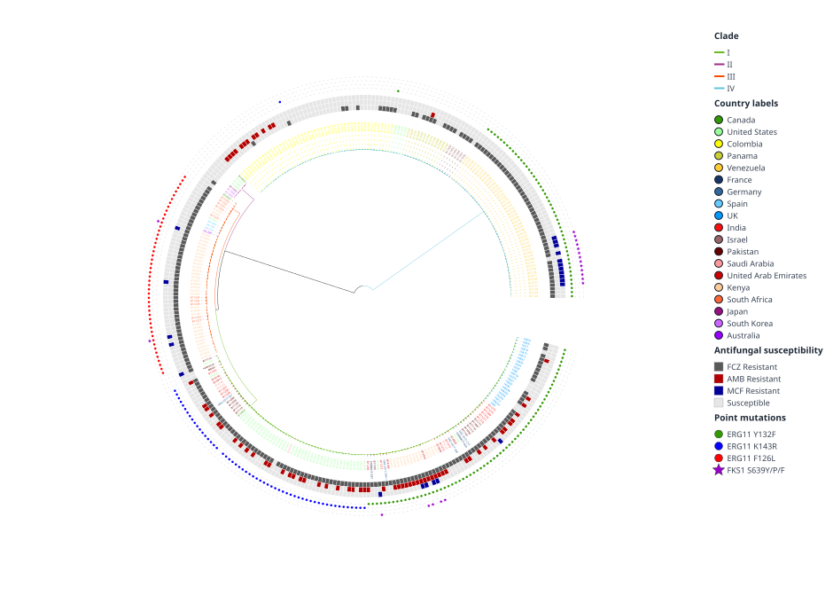
▶ Show / Hide Python Code read_treeread_tablegroupOTUfactor
from ggtree import (
system_file, read_tree, read_table, groupOTU, factor, DataFrame,
ggtree, aes, geom_tippoint, geom_tiplab, scale_colour_manual,
new_scale_colour, new_scale_fill, geom_fruit, geom_tile, geom_star,
scale_fill_manual, scale_starshape_manual, guide_legend, theme,
)
dat = read_table(system_file("extdata", "TDbook", "df_Candidaauris_data.tsv"))
tr = read_tree(system_file("extdata", "TDbook", "tree_Candidaauris.nwk"))
countries = [
"Canada", "United States", "Colombia", "Panama", "Venezuela",
"France", "Germany", "Spain", "UK", "India", "Israel", "Pakistan",
"Saudi Arabia", "United Arab Emirates", "Kenya", "South Africa",
"Japan", "South Korea", "Australia",
]
c_map = {str(c): str(col) for c, col in zip(dat["COUNTRY"], dat["COUNTRY__colour"]) if c}
country_colors = [c_map[c] for c in countries]
dat1 = DataFrame({
"ID": dat["ID"],
"COUNTRY": factor(dat["COUNTRY"], levels=countries),
})
af_levels = ["FCZ", "AMB", "MCF"]
d2_id, d2_af, d2_tp = [], [], []
for af in af_levels:
for tid, raw in zip(dat["ID"], dat[af]):
d2_id.append(tid)
d2_af.append(af)
d2_tp.append("Susceptible" if (raw is None or "Not_" in str(raw)) else f"{af} {raw}")
dat2 = DataFrame({
"ID": d2_id,
"Antifungal": factor(d2_af, levels=af_levels),
"type": factor(d2_tp, levels=["FCZ Resistant", "AMB Resistant", "MCF Resistant", "Susceptible"]),
})
d3_id, d3_pt, d3_mut = [], [], []
for pt in ["ERG11", "FKS1"]:
for tid, raw in zip(dat["ID"], dat[pt]):
d3_id.append(tid)
d3_pt.append(pt)
d3_mut.append(None if (raw is None or "WT" in str(raw)) else f"{pt} {raw}")
dat3 = DataFrame({
"ID": d3_id,
"point": factor(d3_pt, levels=["ERG11", "FKS1"]),
"mutation": factor(d3_mut, levels=["ERG11 Y132F", "ERG11 K143R", "ERG11 F126L", "FKS1 S639Y/P/F"]),
})
clades = {}
for tid, cl in zip(dat["ID"], dat["CLADE"]):
if cl:
clades.setdefault(str(cl), []).append(str(tid))
tr = groupOTU(tr, clades, "Clade")
p = (
ggtree(tr, layout="fan", open_angle=15, size=0.2, mapping=aes(colour="Clade"))
+ scale_colour_manual(
name="Clade",
values=["black", "#69B920", "#9C2E88", "#F74B00", "#60C3DB"],
labels=["", "I", "II", "III", "IV"],
guide=guide_legend(
keywidth=0.5, keyheight=0.5, order=1,
override_aes={"linetype": {"0": None, "Clade1": 1, "Clade2": 1, "Clade3": 1, "Clade4": 1}},
),
)
+ new_scale_colour()
)
p1 = (
p % dat1
+ geom_tippoint(aes(colour="COUNTRY"), alpha=0.0)
+ geom_tiplab(aes(colour="COUNTRY"), align=True, linetype=3, size=1.0, linesize=0.2, show_legend=False)
+ scale_colour_manual(
name="Country labels",
values=country_colors,
guide=guide_legend(keywidth=0.5, keyheight=0.5, order=2, override_aes={"size": 2, "alpha": 1}),
)
)
p2 = (
p1
+ geom_fruit(
data=dat2, geom=geom_tile,
mapping=aes(x="Antifungal", y="ID", fill="type"),
width=0.1, color="white", pwidth=0.1, offset=0.15,
)
+ scale_fill_manual(
name="Antifungal susceptibility",
values=["#595959", "#B30000", "#020099", "#E6E6E6"],
na_translate=False,
guide=guide_legend(keywidth=0.5, keyheight=0.5, order=3),
)
+ new_scale_fill()
)
p3 = (
p2
+ geom_fruit(
data=dat3, geom=geom_star,
mapping=aes(x="mutation", y="ID", fill="mutation", starshape="point"),
size=1.0, starstroke=0.0, pwidth=0.1, inherit_aes=False,
grid_params={"linetype": 3, "size": 0.2},
)
+ scale_fill_manual(
name="Point mutations",
values=["#329901", "#0600FF", "#FF0100", "#9900CC"],
guide=guide_legend(
keywidth=0.5, keyheight=0.5, order=4,
override_aes={
"starshape": {
"ERG11 Y132F": 15,
"ERG11 K143R": 15,
"ERG11 F126L": 15,
"FKS1 S639Y/P/F": 1,
},
"size": 2,
},
),
na_translate=False,
)
+ scale_starshape_manual(values=[15, 1], guide="none")
+ theme(legend_title_size=7, legend_text_size=5.5)
)
p3

▶ Show / Hide Python Code read_treeread_tablefactorgeom_tippoint
from ggtree import (
system_file, read_tree, read_table, factor, DataFrame,
ggtree, aes, geom_tippoint, scale_colour_manual, geom_fruit,
geom_star, geom_tile, scale_fill_manual, new_scale_fill,
guide_legend, theme,
)
tr = read_tree(system_file("extdata", "TDbook", "tree_NJIDqgsS.nwk"))
metada = read_table(system_file("extdata", "TDbook", "df_NJIDqgsS.tsv"))
country_map = {}
for c, col in zip(metada["country"], metada["country__colour"]):
if c is not None and str(c) not in country_map:
country_map[str(c)] = str(col)
year_pairs = sorted(
{(int(y), str(col)) for y, col in zip(metada["year"], metada["year__colour"]) if y is not None},
key=lambda kv: kv[0],
reverse=True,
)
metadata = DataFrame({
"id": metada["id"],
"country": factor(metada["country"], levels=list(country_map.keys())),
"year": factor([str(y) if y is not None else None for y in metada["year"]], levels=[str(y) for y, _ in year_pairs]),
"haplotype": [str(h) if (h is not None and len(str(h)) > 0) else None for h in metada["haplotype"]],
})
p = (
ggtree(tr, layout="fan", open_angle=15, size=0.1)
% metadata
+ geom_tippoint(mapping=aes(colour="country"), size=1.5, stroke=0.0, alpha=0.4)
+ scale_colour_manual(
name="Country",
values=list(country_map.values()),
guide=guide_legend(
keywidth=0.3, keyheight=0.3, ncol=2,
override_aes={"size": 2, "alpha": 1}, order=1,
),
)
+ geom_fruit(
geom=geom_star,
mapping=aes(fill="haplotype"),
starshape=26,
color=None,
size=2.0,
starstroke=0.0,
offset=0.0,
)
+ scale_fill_manual(
name="Haplotype",
values=["red"],
guide=guide_legend(keywidth=0.3, keyheight=0.3, order=3),
na_translate=False,
)
+ new_scale_fill()
+ geom_fruit(
geom=geom_tile,
mapping=aes(fill="year"),
width=0.002,
offset=0.1,
)
+ scale_fill_manual(
name="Year",
values=[col for _, col in year_pairs],
guide=guide_legend(keywidth=0.3, keyheight=0.3, ncol=2, order=2),
)
+ theme(legend_title_size=6, legend_text_size=4.5)
)
p
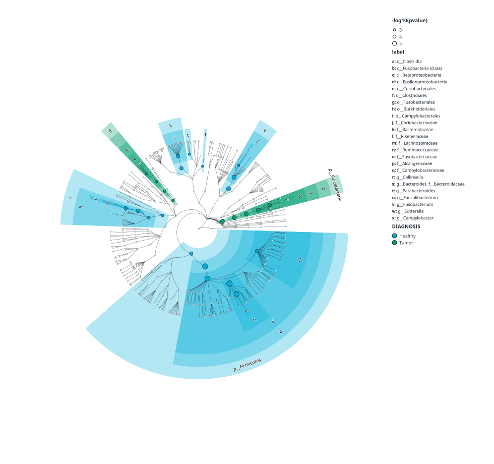
▶ Show / Hide Python Code ggdiffcladescale_fill_manualguidesguide_legend
from ggtree import (
read_table, system_file, ggdiffclade, scale_fill_manual,
guides, guide_legend, theme, element_rect, element_text,
margin, unit, NA,
)
taxa = read_table(system_file("extdata", "TDbook", "df_alltax_info.tsv"), header=True, sep="\t")
dt = read_table(system_file("extdata", "TDbook", "df_difftax.tsv"), header=True, sep="\t")
p = (
ggdiffclade(
obj=taxa,
nodedf=dt,
factorName="DIAGNOSIS",
layout="radial",
skpointsize=0.6,
cladetext=2,
linewd=0.2,
taxlevel=3,
reduce=True,
)
+ scale_fill_manual(values=["#00AED7", "#009E73"])
+ guides(color=guide_legend(keywidth=0.1, keyheight=0.6, order=3, ncol=1))
+ theme(
panel_background=element_rect(fill=NA),
legend_position="right",
plot_margin=margin(0, 0, 0, 0),
legend_spacing_y=unit(0.02, "cm"),
legend_title=element_text(size=7.5),
legend_text=element_text(size=5.5),
legend_box_spacing=unit(0.02, "cm"),
)
)
p
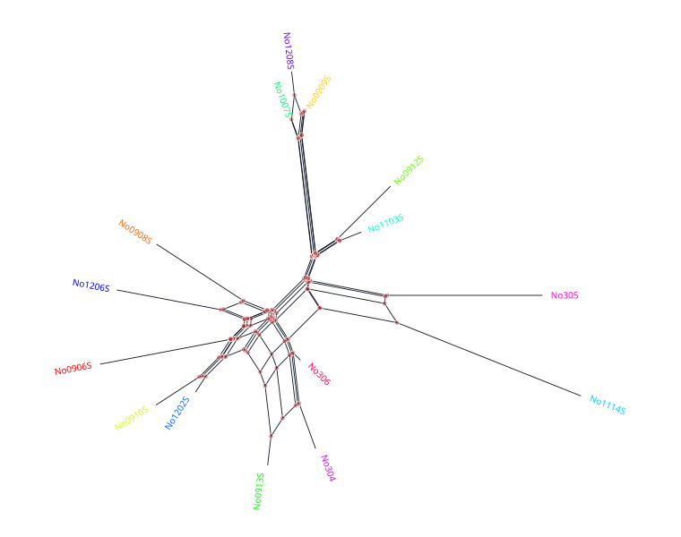
▶ Show / Hide Python Code read_nexus_networxggsplitnetgeom_splitnetgeom_tiplab2
from ggtree import (
read_nexus_networx, system_file, ggsplitnet, aes,
geom_tiplab2, geom_nodepoint, scale_color_manual,
rainbow, theme, ggexpand,
)
nnet = read_nexus_networx(system_file("extdata", "trees", "woodmouse.nxs"))
p = (
ggsplitnet(nnet)
+ geom_tiplab2(aes(color="label"), hjust=-0.1)
+ geom_nodepoint(color="firebrick", alpha=0.4)
+ scale_color_manual(values=rainbow(15))
+ theme(legend_position="none")
+ ggexpand(0.1)
+ ggexpand(0.1, direction=-1)
)
p

▶ Show / Hide Python Code facet_widthsgeom_facetgeom_barfacet_grid
from ggtree import (
set_seed, rtree, runif, data_frame, melt, ggtree, geom_tiplab,
geom_facet, geom_bar, aes, xlim_tree, facet_widths, ggplot,
geom_point, facet_grid, read_table, system_file, theme, plot_list,
)
set_seed(123)
tree = rtree(30)
p = ggtree(tree, branch_length="none") + geom_tiplab() + theme(legend_position="none")
a = runif(30, 0, 1)
b = [1.0 - v for v in a]
df = melt(data_frame(label=tree.tip_label, a=a, b=b), id_vars=["label"])
p2 = (
p
+ geom_facet(
panel="bar",
data=df,
geom=geom_bar,
mapping=aes(x="value", fill="factor(variable)"),
orientation="y",
width=0.8,
stat="identity",
)
+ xlim_tree(9)
)
pa = facet_widths(p2, {"Tree": 0.5})
iris = read_table(system_file("extdata", "TDbook", "iris.tsv"), header=True, sep="\t")
pb = facet_widths(
ggplot(iris, aes("Sepal.Width", "Petal.Length")) + geom_point() + facet_grid(".~Species"),
{"setosa": 0.5},
)
plot_list(pa, pb, ncol=2, tag_levels="A")

▶ Show / Hide Python Code facet_labellerfacet_widthsgeom_facetgeom_bar
from ggtree import (
set_seed, rtree, runif, data_frame, melt, ggtree, geom_tiplab,
geom_facet, geom_bar, aes, xlim_tree, facet_labeller, facet_widths,
theme, plot_list,
)
set_seed(123)
tree = rtree(30)
p = ggtree(tree, branch_length="none") + geom_tiplab() + theme(legend_position="none")
a = runif(30, 0, 1)
b = [1.0 - v for v in a]
df = melt(data_frame(label=tree.tip_label, a=a, b=b), id_vars=["label"])
p2 = (
p
+ geom_facet(
panel="bar",
data=df,
geom=geom_bar,
mapping=aes(x="value", fill="factor(variable)"),
orientation="y",
width=0.8,
stat="identity",
)
+ xlim_tree(9)
)
pa = facet_labeller(p2, {"Tree": "phylogeny", "bar": "HELLO"})
pb = facet_widths(facet_labeller(p2, {"Tree": "phylogeny"}), {"Tree": 0.4})
plot_list(pa, pb, ncol=2, tag_levels="A")
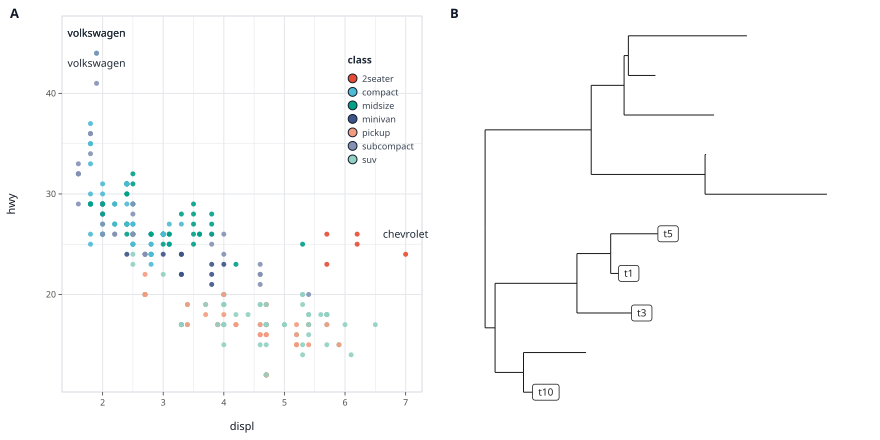
▶ Show / Hide Python Code geom_text2geom_label2coord_cartesiantheme_light
from ggtree import (
read_table, system_file, ggplot, ggtree, rtree, aes,
geom_point, geom_text2, geom_label2, coord_cartesian,
theme_light, theme, plot_list,
)
mpg = read_table(system_file("extdata", "TDbook", "mpg.tsv"), header=True, sep="\t")
p = (
ggplot(mpg, aes(x="displ", y="hwy"))
+ geom_point(aes(color="class"))
+ geom_text2(aes(label="manufacturer", subset="(hwy > 40) | (displ > 6.5)"), nudge_y=1)
+ coord_cartesian(clip="off")
+ theme_light()
+ theme(legend_position=[0.85, 0.75])
)
p2 = ggtree(rtree(10)) + geom_label2(aes(subset="node < 5", label="label"))
plot_list(p, p2, ncol=2, tag_levels="A")
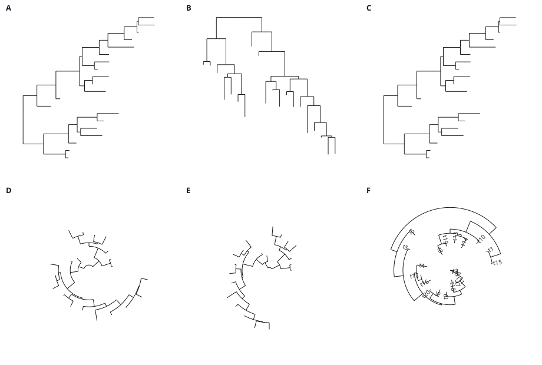
▶ Show / Hide Python Code layout_dendrogramlayout_rectangularlayout_circularlayout_fan
from ggtree import (
set_seed, rtree, ggtree, layout_dendrogram, layout_rectangular,
layout_circular, layout_fan, layout_inward_circular,
geom_tiplab, plot_list,
)
set_seed(2019)
x = rtree(20)
p = ggtree(x)
pa = p
pb = p + layout_dendrogram()
pc = ggtree(x, layout="circular") + layout_rectangular()
pd = p + layout_circular()
pe = p + layout_fan(angle=90)
pf = p + layout_inward_circular(xlim=4) + geom_tiplab(hjust=1)
plot_list(pa, pb, pc, pd, pe, pf, ncol=3, tag_levels="A")

▶ Show / Hide Python Code xlim_treexlim_expandgeom_facetfacet_grid
from ggtree import (
set_seed, rtree, rnorm, data_frame, ggtree, geom_tiplab,
geom_facet, geom_point, aes, xlim_tree, xlim_expand,
ggplot, facet_grid, read_table, system_file, plot_list,
)
set_seed(2019 - 5 - 2)
x = rtree(30)
p = ggtree(x) + geom_tiplab()
d = data_frame(label=x.tip_label, value=rnorm(30))
p2 = p + geom_facet(panel="Dot", data=d, geom=geom_point, mapping=aes(x="value"))
pa = p2 + xlim_tree(6) + xlim_expand([-10, 10], "Dot")
iris = read_table(system_file("extdata", "TDbook", "iris.tsv"), header=True, sep="\t")
g = ggplot(iris, aes("Sepal.Length", "Sepal.Width")) + geom_point() + facet_grid(".~Species", scales="free_x")
pb = g + xlim_expand([0, 15], "virginica")
plot_list(pa, pb, ncol=2, tag_levels="A")

▶ Show / Hide Python Code hexpandvexpandgeom_tiplabggplot
from ggtree import (
set_seed, rtree, ggtree, geom_tiplab, hexpand, vexpand,
ggplot, aes, geom_point, read_table, system_file, plot_list,
)
set_seed(2019 - 5 - 2)
x = rtree(30)
x.tip_label = [f"to make the label longer_{lbl}" for lbl in x.tip_label]
p1 = ggtree(x) + geom_tiplab() + hexpand(0.4)
iris = read_table(system_file("extdata", "TDbook", "iris.tsv"), header=True, sep="\t")
p2 = (
ggplot(iris, aes("Sepal.Width", "Petal.Width"))
+ geom_point()
+ hexpand(0.2, direction=-1)
+ vexpand(0.2)
)
plot_list(p1, p2, tag_levels="A", widths=[0.6, 0.4])
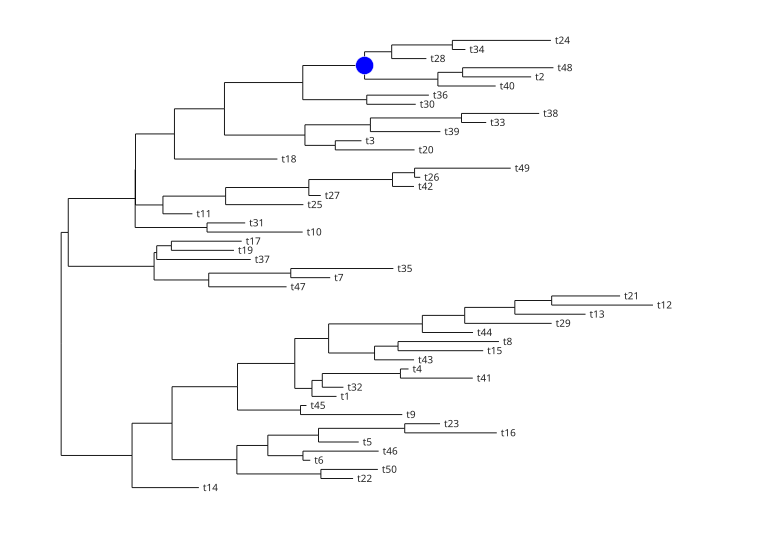
▶ Show / Hide Python Code td_filteroffspringgeom_textgeom_nodepoint
from ggtree import (
set_seed, rtree, ggtree, offspring, aes, geom_text,
geom_nodepoint, td_filter, hexpand,
)
set_seed(2020)
tree = rtree(50)
p = ggtree(tree)
selected_nodes = offspring(p, 67)["node"]
res = (
p
+ geom_text(aes(label="label"), data=td_filter("isTip & node in selected_nodes"), hjust=0)
+ geom_nodepoint(aes(subset="node == 67"), size=5, color="blue")
+ hexpand(0.12)
)
res

▶ Show / Hide Python Code nesttd_unnesttd_filterscale_size
from ggtree import (
set_seed, rtree, rnorm, data_frame, rep, c, nest, ggtree,
geom_point, aes, td_unnest, td_filter, scale_size, plot_list,
)
set_seed(1997)
tr = rtree(5)
d = data_frame(
id=rep(tr.tip_label, 2),
value=[abs(v) for v in rnorm(10, 6, 2)],
group=c(rep("A", 5), rep("B", 5)),
)
d2 = nest(d, value="value", group="group")
p = ggtree(tr) % d2
p2 = (
p
+ geom_point(aes("x", "y", size="value", colour="group"), data=td_unnest(["value", "group"]), alpha=0.4)
+ scale_size(range=[3, 10], limits=[3, 10])
)
p3 = (
p
+ geom_point(
aes("x", "y", size="value", colour="group"),
data=td_unnest(["value", "group"], _f=td_filter("isTip & node == 4")),
alpha=0.4,
)
+ scale_size(range=[3, 10], limits=[3, 10])
)
plot_list(p2, p3, ncol=2, tag_levels="A")
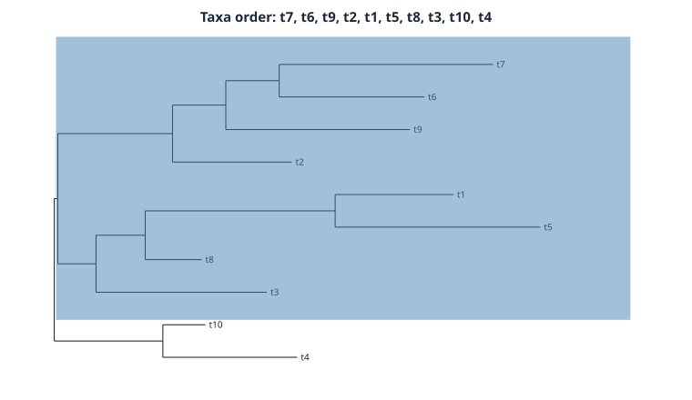
▶ Show / Hide Python Code get_taxa_namegeom_hilightgeom_tiplablabs
from ggtree import set_seed, rtree, ggtree, geom_tiplab, geom_hilight, get_taxa_name, labs
set_seed(123)
tree = rtree(10)
p = ggtree(tree) + geom_tiplab() + geom_hilight(node=12, extendto=2.5)
x = "Taxa order: " + ", ".join(get_taxa_name(p))
p + labs(title=x)
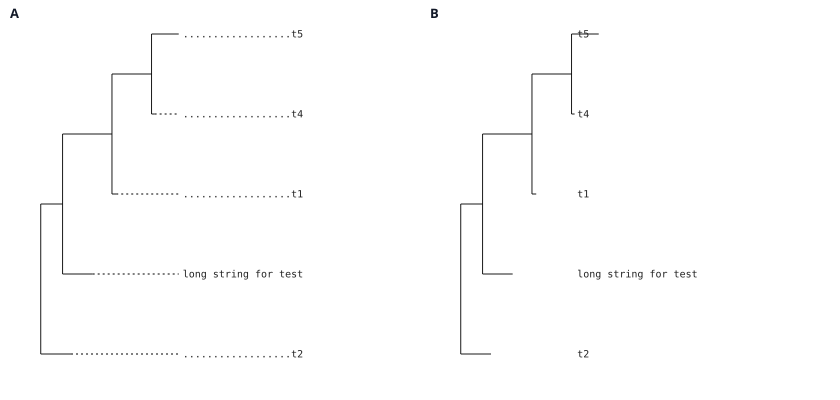
▶ Show / Hide Python Code label_padgeom_tiplabxlimplot_list
from ggtree import set_seed, rtree, data_frame, label_pad, ggtree, geom_tiplab, aes, xlim, NA, plot_list
set_seed(2015 - 12 - 21)
tree = rtree(5)
tree.tip_label[1] = "long string for test"
d = data_frame(
label=tree.tip_label,
newlabel=label_pad(tree.tip_label),
newlabel2=label_pad(tree.tip_label, pad=" "),
)
p = ggtree(tree) % d + xlim(NA, 5)
p1 = p + geom_tiplab(aes(label="newlabel"), align=True, family="mono", linetype="dotted", linesize=0.7)
p2 = p + geom_tiplab(aes(label="newlabel2"), align=True, family="mono", linetype=None, offset=-0.5) + xlim(NA, 5)
plot_list(p1, p2, ncol=2, tag_levels="A")
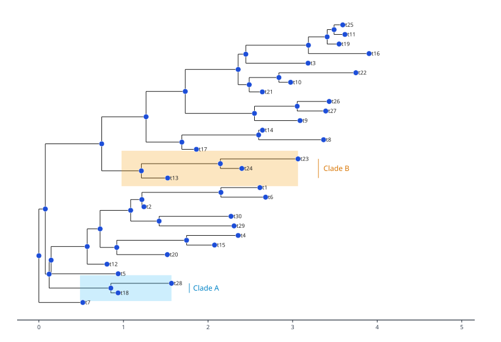
▶ Show / Hide Python Code identifygeom_hilight_interactivegeom_cladelab_interactivegeom_point_interactive
from ggtree import (
set_seed, rtree, ggtree, aes, geom_hilight_interactive,
geom_cladelab_interactive, geom_point_interactive,
geom_tiplab_interactive, hexpand, theme_tree2,
)
set_seed(2021)
tr = rtree(30)
p = (
ggtree(tr)
+ geom_hilight_interactive(node=34, fill="#38BDF8", alpha=0.25, tooltip="Clade 34 highlighted")
+ geom_hilight_interactive(node=45, fill="#F59E0B", alpha=0.25, tooltip="Clade 45 highlighted")
+ geom_cladelab_interactive(node=34, label="Clade A", offset=0.18, barcolor="#0284C7", textcolor="#0284C7", tooltip="Interactive Clade A")
+ geom_cladelab_interactive(node=45, label="Clade B", offset=0.18, barcolor="#D97706", textcolor="#D97706", tooltip="Interactive Clade B")
+ geom_point_interactive(aes(tooltip="label"), size=2.4, color="#1D4ED8")
+ geom_tiplab_interactive(aes(tooltip="label"), size=2.4)
+ hexpand(0.32)
+ theme_tree2()
)
p
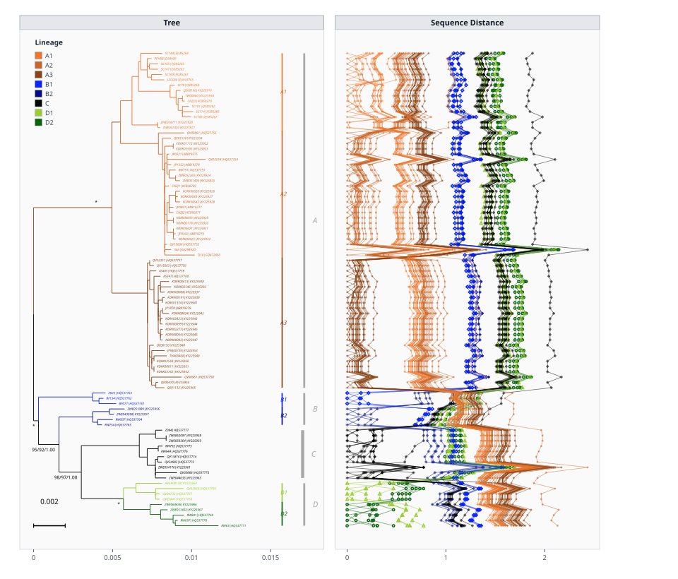
▶ Show / Hide Python Code read_treeread_fastagroupCladegeom_cladelab
import numpy as np
from ggtree import (
read_tree, read_fasta, system_file, groupClade, rootnode, rotate,
DataFrame, ggtree, aes, geom_tiplab, geom_treescale, scale_color_manual,
scale_shape_manual, theme_tree2, geom_cladelab, geom_strip, geom_nodelab,
geom_facet, geom_point, geom_path, facet_widths, hexpand,
)
tree = read_tree(system_file("extdata", "TDbook", "tree_HPV58.nwk"))
aln = read_fasta(system_file("extdata", "TDbook", "dna_HPV58_aln.fas"))
clade = {"A3": 92, "A1": 94, "A2": 108, "B1": 156, "B2": 159, "C": 163, "D1": 173, "D2": 176}
tree = groupClade(tree, clade)
cols = {
"A1": "#EC762F", "A2": "#CA6629", "A3": "#894418", "B1": "#0923FA",
"B2": "#020D87", "C": "#000000", "D1": "#9ACD32", "D2": "#08630A",
}
p = (
rotate(ggtree(tree, aes(color="group"), ladderize=False), rootnode(tree))
+ geom_tiplab(aes(label="paste0(\"italic('\", label, \"')\")"), parse=True, size=1.6)
+ geom_treescale(x=0, y=1, width=0.002)
+ scale_color_manual(
values=cols,
na_value="black",
name="Lineage",
breaks=["A1", "A2", "A3", "B1", "B2", "C", "D1", "D2"],
)
+ hexpand(0.42)
+ theme_tree2(legend_position=(0.05, 0.90))
)
dat1 = DataFrame({
"node": [94, 108, 131, 156, 159, 173, 176],
"name": ["A1", "A2", "A3", "B1", "B2", "D1", "D2"],
"offset": [0.0038] * 7,
"offset_text": [-0.0004] * 7,
"extend": [(0, 0.5), 0.5, (0.5, 0), (0, 0.5), (0.5, 0), (0, 0.5), (0.5, 0)],
})
dat2 = DataFrame({
"node": [92, 172],
"name": ["A", "D"],
"offset": [0.0052, 0.0052],
"offset_text": [0.00025, 0.00025],
"extend": [0, 0],
})
dat3 = DataFrame({
"node": [163],
"name": ["C"],
"offset": [0.0051],
"offset_text": [0.00025],
"extend": [0],
})
p = (
p
+ geom_cladelab(
data=dat1,
mapping=aes(node="node", label="name", color="group", offset="offset", offset_text="offset_text", extend="extend"),
barsize=1.2, fontface=3, align=True, fontsize=2.6,
)
+ geom_cladelab(
data=dat2,
mapping=aes(node="node", label="name", offset="offset", offset_text="offset_text", extend="extend"),
barcolor="darkgrey", textcolor="darkgrey", barsize=2.0, fontsize=3.4, fontface=3, align=True,
)
+ geom_cladelab(
data=dat3,
mapping=aes(node="node", label="name", offset="offset", offset_text="offset_text", extend="extend"),
barcolor="darkgrey", textcolor="darkgrey", barsize=3.2, fontsize=3.4, fontface=3, align=True,
)
+ geom_strip(65, 71, "italic(B)", color="darkgrey", offset=0.0052, align=True, offset_text=0.00025, barsize=2.0, fontsize=3.4, parse=True)
+ geom_nodelab(aes(subset="node == 92", label="'*'"), color="black", nudge_x=-0.001, nudge_y=1, size=2.8)
+ geom_nodelab(aes(subset="node == 155", label="'*'"), color="black", nudge_x=-0.0003, nudge_y=-1, size=2.8)
+ geom_nodelab(aes(subset="node == 158", label="'95/92/1.00'"), color="black", nudge_x=-0.0001, nudge_y=-1, hjust=1, size=2.1)
+ geom_nodelab(aes(subset="node == 162", label="'98/97/1.00'"), color="black", nudge_x=-0.0001, nudge_y=-1, hjust=1, size=2.1)
+ geom_nodelab(aes(subset="node == 172", label="'*'"), color="black", nudge_x=-0.0003, nudge_y=-1, size=2.8)
)
tips_df = p.data[p.data["isTip"]]
tips_recs = sorted(tips_df.to_records(), key=lambda r: float(r["y"]))
tips_ordered = [str(r["label"]) for r in tips_recs]
group_map = {str(r["label"]): r.get("group") for r in tips_recs}
seq_bytes = [np.frombuffer(aln[lbl.split("|")[-1]].encode("ascii"), dtype=np.uint8) for lbl in tips_ordered]
seq_mat = np.vstack(seq_bytes)
seq_len = float(seq_mat.shape[1])
seq1_col, seq2_col, dist_col, clade_col = [], [], [], []
for j, s2 in enumerate(tips_ordered):
pct = (seq_mat != seq_mat[j : j + 1]).sum(axis=1) / seq_len * 100.0
g2 = group_map.get(s2)
for s1, dv in zip(tips_ordered, pct):
seq1_col.append(s1)
seq2_col.append(s2)
dist_col.append(float(dv))
clade_col.append(g2)
td = DataFrame({"seq1": seq1_col, "seq2": seq2_col, "dist": dist_col, "clade": clade_col})
p2 = (
p
+ geom_facet(panel="Sequence Distance", data=td, geom=geom_point, alpha=0.6, size=0.9, mapping=aes(x="dist", color="clade", shape="clade"))
+ geom_facet(panel="Sequence Distance", data=td, geom=geom_path, alpha=0.55, size=0.6, mapping=aes(x="dist", group="seq2", color="clade"))
+ scale_shape_manual(values=[1, 2, 3, 4, 5, 6, 7, 8], guide=False)
)
facet_widths(p2, widths=[1.15, 1.0])

▶ Show / Hide Python Code read_newickcutgeom_point2scale_fill_manual
from ggtree import (
read_newick, system_file, rootnode, ggtree, aes, geom_tiplab,
geom_point2, xlim, theme_tree, scale_fill_manual,
)
tree = read_newick(system_file("extdata", "TDbook", "text_RMI_tree.nwk"), node_label="support")
root = rootnode(tree)
p = (
ggtree(tree, color="black", size=1.1, linetype=1, right=True)
+ geom_tiplab(size=2.6, hjust=-0.06, fontface="bold")
+ xlim(0, 0.09)
+ geom_point2(
aes(subset="!isTip & node != root", fill="cut(support, c(0, 700, 900, 1000))"),
shape=21,
size=3.0,
)
+ theme_tree(legend_position=(0.18, 0.20))
+ scale_fill_manual(
values={"(900,1e+03]": "black", "(700,900]": "grey", "(0,700]": "white"},
guide="legend",
name="Bootstrap Percentage(BP)",
breaks=["(900,1e+03]", "(700,900]", "(0,700]"],
labels=["BP >= 90", "70 <= BP < 90", "BP < 70"],
)
)
p
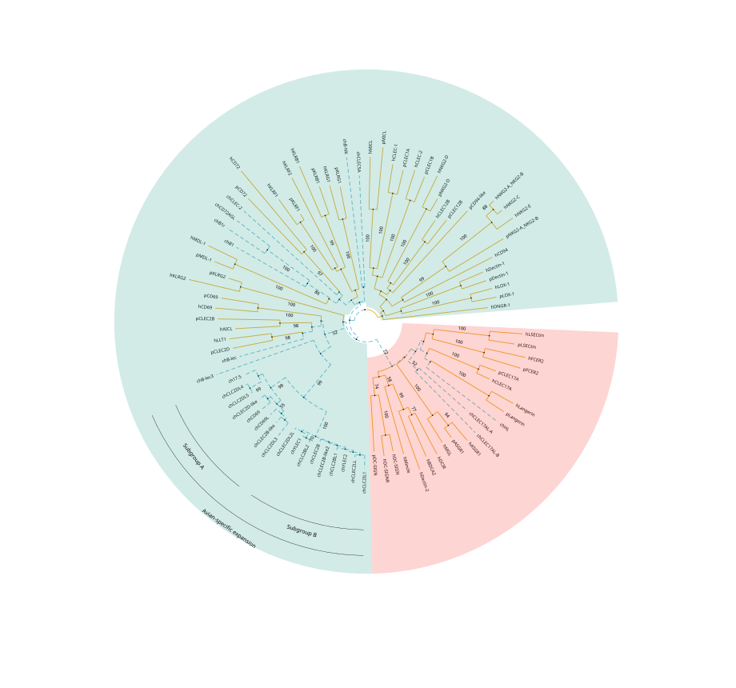
▶ Show / Hide Python Code groupOTUfliprotategeom_hilight
from ggtree import (
read_tree, system_file, groupOTU, DataFrame, ggtree, aes,
scale_color_manual, geom_nodepoint, geom_tiplab, flip, rotate,
geom_hilight, geom_cladelab, geom_nodelab, theme,
)
mytree = read_tree(system_file("extdata", "TDbook", "tree_treenwk_30.4.19.nwk"))
cls = [t for t in mytree.tip_label if t.startswith("ch")]
labeltree = groupOTU(mytree, cls)
p = (
ggtree(labeltree, aes(color="group", linetype="group"), layout="circular")
+ scale_color_manual(values=["#efad29", "#63bbd4"])
+ geom_nodepoint(color="black", size=0.1)
+ geom_tiplab(size=2.0, color="black")
)
p2 = (
p
+ flip(136, 110)
+ flip(141, 145)
+ rotate(141)
+ rotate(142)
+ rotate(160)
+ rotate(164)
+ rotate(131)
)
dat = DataFrame({
"node": [110, 88, 156, 136],
"fill": ["#229f8a", "#229f8a", "#229f8a", "#f9311f"],
})
p3 = p2 + geom_hilight(data=dat, mapping=aes(node="node", fill="I(fill)"), alpha=0.2, extendto=1.4)
p4 = p3 + geom_cladelab(
node=113,
label="Avian-specific expansion",
align=True,
angle=-35,
offset_text=0.05,
hjust="center",
fontsize=2.2,
offset=0.2,
barsize=0.2,
)
p5 = p4 + geom_nodelab(
mapping=aes(x="branch", label="label", subset="!is.na(as.numeric(label)) & as.numeric(label) > 50"),
size=2.0,
color="black",
nudge_y=0.6,
)
sub_df = DataFrame({"node": [114, 121], "name": ["Subgroup A", "Subgroup B"]})
p6 = (
p5
+ geom_cladelab(
data=sub_df,
mapping=aes(node="node", label="name"),
align=True,
offset=0.05,
offset_text=0.03,
hjust="center",
barsize=0.2,
fontsize=2.2,
angle="auto",
horizontal=False,
)
+ theme(legend_position="none")
)
p6

▶ Show / Hide Python Code bionjread_tablegeom_facetgeom_motif
from ggtree import (
read_table, system_file, bionj, ggtree, aes, geom_tiplab, xlim_tree,
geom_facet, geom_motif, scale_fill_brewer, theme, element_blank, facet_widths,
)
example_genes = read_table(system_file("extdata", "TDbook", "example_genes.tsv"), header=True, sep="\t")
genomes = []
for g_name in example_genes["molecule"].tolist():
if g_name not in genomes:
genomes.append(g_name)
gene_sets = {
g_name: set(example_genes[example_genes["molecule"] == g_name]["gene"].tolist())
for g_name in genomes
}
n = len(genomes)
d = [[0.0] * n for _ in range(n)]
for i in range(n):
for j in range(i):
gi, gj = gene_sets[genomes[i]], gene_sets[genomes[j]]
jacc = len(gi & gj) / max(len(gi | gj), 1)
d[i][j] = d[j][i] = 1.0 - jacc
tree = bionj(d, labels=genomes)
p = (
ggtree(tree, branch_length="none")
+ geom_tiplab(size=3.0)
+ xlim_tree(5.5)
+ geom_facet(
mapping=aes(xmin="start", xmax="end", fill="gene"),
data=example_genes,
geom=geom_motif,
panel="Alignment",
on="genE",
label="gene",
align="left",
)
+ scale_fill_brewer(palette="Set3", name="gene")
+ theme(strip_text=element_blank())
)
facet_widths(p, widths=[1, 2])
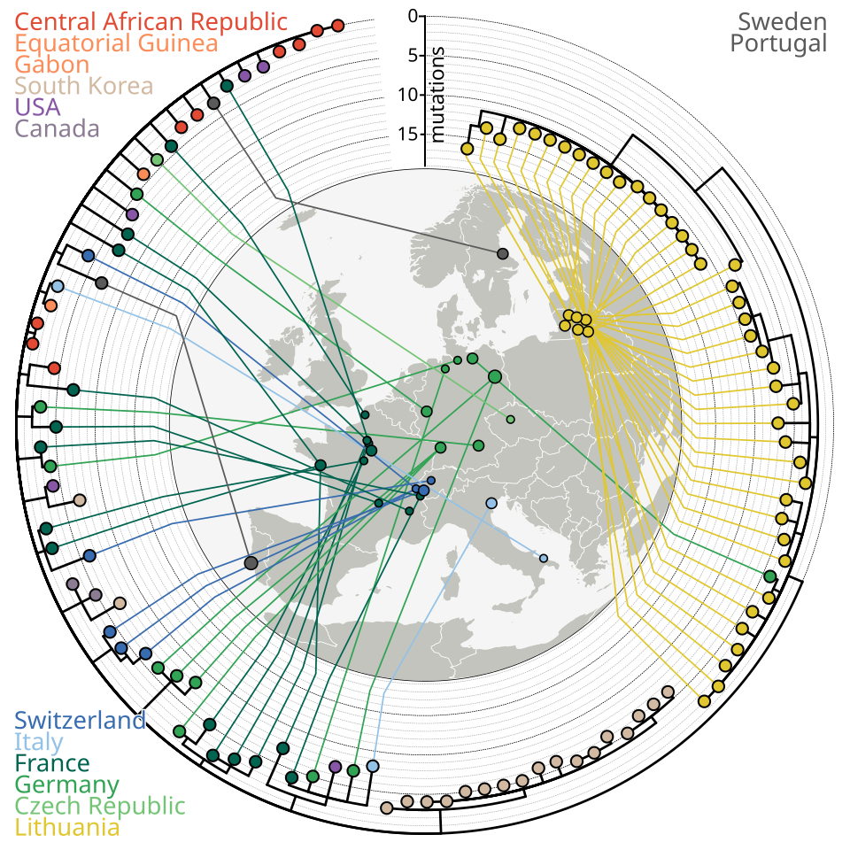
▶ Show / Hide Python Code ggtreerotate_treegeom_polygongeom_path
import csv
import json
import math
from ggtree import (
DataFrame, aes, geom_path, geom_point, geom_polygon, geom_segment,
geom_text, geom_tippoint, ggtree, margin, read_tree, reorder_phylo,
rotate_tree, scale_color_manual, scale_fill_manual,
scale_size_continuous, system_file, theme, theme_void,
)
palette = {
"Lithuania": "#e1c72f", "Czech Republic": "#74c476", "Germany": "#31a354",
"Switzerland": "#386cb0", "France": "#016450", "Italy": "#93c2e6",
"Sweden": "#5a5a5a", "Portugal": "#5a5a5a",
"Central African Republic": "#e34a33", "Equatorial Guinea": "#fc8d59",
"Gabon": "#fc8d59", "South Korea": "#d2b9a2", "USA": "#8856a7", "Canada": "#8b7c94",
}
tree = reorder_phylo(read_tree(system_file("extdata", "baltic_fig1", "B.1.620.nwk")), "cladewise")
with open(system_file("extdata", "baltic_fig1", "europe_globe.json"), encoding="utf-8") as fh:
globe = json.load(fh)
cal, gc = globe["calibration"], globe["globe_circle"]
t_root_x, r0_ax, inward_lim = -float(cal["max_tip_height"]), float(cal["r0_ax"]), float(cal["inward_lim"])
dr_mut, rot, deg_per_y = float(cal["dr_per_mut"]), float(cal["rotate_angle_deg"]), float(cal["deg_per_y"])
def to_polar(ax_x, ax_y):
r_ax = math.hypot(ax_x, ax_y)
theta_ccw = (math.degrees(math.atan2(ax_y, ax_x)) - rot) % 360.0 + rot
return t_root_x + inward_lim * (1.0 - r_ax / r0_ax), 1.0 + (theta_ccw - rot) / deg_per_y
def cw_polar(mut, ang_cw):
r_ax = r0_ax - mut * dr_mut
rad = math.radians(ang_cw)
return to_polar(r_ax * math.sin(rad), r_ax * math.cos(rad))
tip_rows, conn_rows = [], []
with open(system_file("extdata", "baltic_fig1", "tip_metadata.tsv"), encoding="utf-8", newline="") as fh:
for r in csv.DictReader(fh, delimiter="\t"):
tip_rows.append({"label": r["label"], "country": r["country"]})
if int(r["has_connector"]) == 1:
gid = f"conn_{r['cw_index']}"
for px, py in (
(float(r["ax_x"]), float(r["ax_y"])),
(float(r["shoulder_ax_x"]), float(r["shoulder_ax_y"])),
(float(r["map_ax_x"]), float(r["map_ax_y"])),
):
xg, yg = to_polar(px, py)
conn_rows.append({"x": xg, "y": yg, "group": gid, "country": r["country"]})
cx, cy, gr = float(gc["cx"]), float(gc["cy"]), float(gc["r"])
ocean_df = DataFrame([
dict(zip(("x", "y"), to_polar(cx + gr * math.cos(2 * math.pi * i / 240), cy + gr * math.sin(2 * math.pi * i / 240))), group="ocean", subgroup="ocean_0")
for i in range(240)
])
rim_df = DataFrame([
dict(zip(("x", "y"), to_polar(cx + gr * math.cos(2 * math.pi * (i % 240) / 240), cy + gr * math.sin(2 * math.pi * (i % 240) / 240))), group="rim")
for i in range(241)
])
def poly_df(groups, prefix):
out = []
for gi, subs in enumerate(groups):
for si, pts in enumerate(subs):
for ax_x, ax_y in pts:
xg, yg = to_polar(ax_x, ax_y)
out.append({"x": xg, "y": yg, "group": f"{prefix}_{gi}", "subgroup": f"{prefix}_{gi}_{si}"})
return DataFrame(out)
land_df = poly_df(globe["land"], "land")
lakes_df = poly_df(globe["lakes"], "lake")
borders_df = DataFrame([
dict(zip(("x", "y"), to_polar(ax_x, ax_y)), group=f"b_{bi}")
for bi, pts in enumerate(globe["borders"]) for ax_x, ax_y in pts
])
major_rows, minor_rows = [], []
for m in range(20):
dst = major_rows if m % 5 == 0 else minor_rows
for i in range(141):
xg, yg = cw_polar(float(m), 352.8 * i / 140)
dst.append({"x": xg, "y": yg, "group": f"r_{m}"})
x0, y0 = cw_polar(0.0, 0.0)
x1, y1 = cw_polar(19.0, 0.0)
bar_df = DataFrame([{"x": x0, "y": y0, "xend": x1, "yend": y1}])
tick_ang = 360.0 - math.degrees(0.0042 * math.pi)
tick_rows, txt_rows = [], []
for m in (0, 5, 10, 15):
tx0, ty0 = cw_polar(float(m), tick_ang)
tx1, ty1 = cw_polar(float(m), 0.0)
tick_rows.append({"x": tx0, "y": ty0, "xend": tx1, "yend": ty1})
nx, ny = to_polar(-0.052, r0_ax - m * dr_mut)
txt_rows.append({"x": nx, "y": ny, "label": str(m), "angle": 0.0, "hjust": 1.0, "vjust": 0.5, "fontsize_px": 21.0})
mx, my = to_polar(0.020, r0_ax - 10.0 * dr_mut)
txt_rows.append({"x": mx, "y": my, "label": "mutations", "angle": 90.0, "hjust": 0.5, "vjust": 1.0, "fontsize_px": 23.0})
loc_df = DataFrame([
dict(zip(("x", "y"), to_polar(float(loc["ax_x"]), float(loc["ax_y"]))), country=loc["country"], pt_size=math.sqrt(float(loc["size_tier"])))
for loc in globe["locations"]
])
leg_rows = []
for u, v0, step, hj, names in (
(0.0, 0.01, 0.026, 0.0, ["Lithuania", "Czech Republic", "Germany", "France", "Italy", "Switzerland"]),
(0.99, 0.99, -0.026, 1.0, ["Sweden", "Portugal"]),
(0.0, 0.99, -0.026, 0.0, ["Central African Republic", "Equatorial Guinea", "Gabon", "South Korea", "USA", "Canada"]),
):
for idx, name in enumerate(names):
xg, yg = to_polar(-3.18 + u * 6.36, -3.18 + (v0 + idx * step) * 6.36)
leg_rows.append({"x": xg, "y": yg, "label": name, "country": name, "hjust": hj, "vjust": 0.5, "angle": 0.0, "fontsize_px": 27.5})
p = rotate_tree(
ggtree(
tree, layout="inward_circular", open_angle=float(cal["open_angle_deg"]),
xlim=inward_lim, ladderize=False, color="#000000", size=1.95,
lineend="round", linejoin="round",
),
rot,
)
p.attrs["polar_r_factor"] = 0.489
p = (
(p % DataFrame(tip_rows))
+ geom_polygon(aes(x="x", y="y", group="group", subgroup="subgroup"), data=ocean_df, inherit_aes=False, fill="#f5f5f5", color="none", alpha=1.0, zorder=-6)
+ geom_polygon(aes(x="x", y="y", group="group", subgroup="subgroup"), data=land_df, inherit_aes=False, fill="#c2c4bd", color="#ffffff", size=0.35, alpha=1.0, zorder=-5)
+ geom_polygon(aes(x="x", y="y", group="group", subgroup="subgroup"), data=lakes_df, inherit_aes=False, fill="#f5f5f5", color="none", alpha=1.0, zorder=-4)
+ geom_path(aes(x="x", y="y", group="group"), data=borders_df, inherit_aes=False, color="#ffffff", size=0.65, lineend="round", linejoin="round", zorder=-3)
+ geom_path(aes(x="x", y="y", group="group"), data=rim_df, inherit_aes=False, color="#000000", size=0.58, zorder=-2)
+ geom_path(aes(x="x", y="y", group="group"), data=DataFrame(minor_rows), inherit_aes=False, color="#adadad", size=0.55, linetype="dotted", dasharray="0.9,1.5", lineend="round", zorder=-1)
+ geom_path(aes(x="x", y="y", group="group"), data=DataFrame(major_rows), inherit_aes=False, color="#000000", size=0.60, linetype="dotted", dasharray="0.9,1.5", lineend="round", zorder=-1)
+ geom_segment(aes(x="x", y="y", xend="xend", yend="yend"), data=bar_df, inherit_aes=False, color="#000000", size=1.45, lineend="square", zorder=2)
+ geom_segment(aes(x="x", y="y", xend="xend", yend="yend"), data=DataFrame(tick_rows), inherit_aes=False, color="#000000", size=1.45, lineend="square", zorder=2)
+ geom_text(aes(x="x", y="y", label="label", hjust="hjust", vjust="vjust", angle="angle"), data=DataFrame(txt_rows), inherit_aes=False, color="#000000", bg_colour="#ffffff", bg_r=2.8, zorder=15)
+ geom_path(aes(x="x", y="y", group="group", color="country"), data=DataFrame(conn_rows), inherit_aes=False, size=1.30, lineend="round", linejoin="round", zorder=10)
+ geom_tippoint(aes(fill="country"), shape=21, color="#000000", size=3.7, stroke=1.15, zorder=12)
+ geom_point(aes(x="x", y="y", fill="country", size="pt_size"), data=loc_df, inherit_aes=False, shape=21, color="#000000", stroke=0.90, zorder=14)
+ geom_text(aes(x="x", y="y", label="label", hjust="hjust", vjust="vjust", angle="angle", color="country"), data=DataFrame(leg_rows), inherit_aes=False, bg_colour="#ffffff", bg_r=2.8, zorder=16)
+ scale_fill_manual(values=palette)
+ scale_color_manual(values=palette)
+ scale_size_continuous(range=(2.4, 4.05))
+ theme_void()
+ theme(legend_position="none", plot_margin=margin(8, 8, 8, 8))
)
p
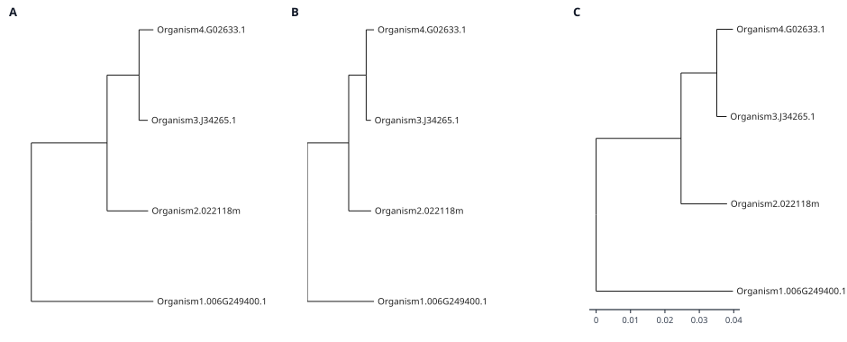
▶ Show / Hide Python Code xlimcoord_cartesiantheme_tree2margin
from ggtree import (
read_tree, ggtree, geom_tiplab, xlim, coord_cartesian,
theme_tree2, margin, plot_list,
)
tree = read_tree(
text="(Organism1.006G249400.1:0.03977,"
"(Organism2.022118m:0.01337,(Organism3.J34265.1:0.00284,"
"Organism4.G02633.1:0.00468)0.51:0.0104):0.02469);"
)
p = ggtree(tree) + geom_tiplab()
p_b = p + xlim(0, 0.08)
p_c = p + coord_cartesian(clip="off") + theme_tree2(plot_margin=margin(6, 120, 6, 6))
plot_list(p, p_b, p_c, ncol=3, tag_levels="A")

▶ Show / Hide Python Code rename_taxageom_tiplabxlimplot_list
from ggtree import read_tree, data_frame, ggtree, geom_tiplab, xlim, aes, NA, plot_list
tree = read_tree(text="((A, B), (C, D));")
d = data_frame(
label=["A", "B", "C", "D"],
label2=["sunflower", "tree", "snail", "mushroom"],
)
p = ggtree(tree) + xlim(NA, 3)
p1 = p + geom_tiplab()
p2 = p % d + geom_tiplab(aes(label="label2"))
plot_list(p1, p2, ncol=2, tag_levels="A")

▶ Show / Hide Python Code geom_tiplabgeom_richtexttd_filterhexpand
from ggtree import (
read_tree, data_frame, ggtree, aes, xlim, NA, geom_tiplab,
geom_richtext, td_filter, hexpand, plot_list,
)
tree = read_tree(text="((a,(b,c)),d);")
genus = ["Gorilla", "Pan", "Homo", "Pongo"]
species = ["gorilla", "spp.", "sapiens", "pygmaeus"]
geo = ["Africa", "Africa", "World", "Asia"]
colors = ["#E495A5", "#ABB065", "#39BEB1", "#ACA4E2"]
d2 = data_frame(
label=tree.tip_label,
genus=genus,
species=species,
geo=geo,
lab=[f"italic({g})~bolditalic({s})~({ge})" for g, s, ge in zip(genus, species, geo)],
color=colors,
name=[f"<i style='color:{c}'>{g} **{s}**</i> ({ge})" for c, g, s, ge in zip(colors, genus, species, geo)],
)
p1 = ggtree(tree) % d2 + xlim(NA, 6) + geom_tiplab(aes(label="lab"), parse=True)
p2 = ggtree(tree) % d2 + geom_richtext(aes(label="name"), data=td_filter("isTip"), label_color=NA) + hexpand(0.35)
plot_list(p1, p2, ncol=2, tag_levels="A")
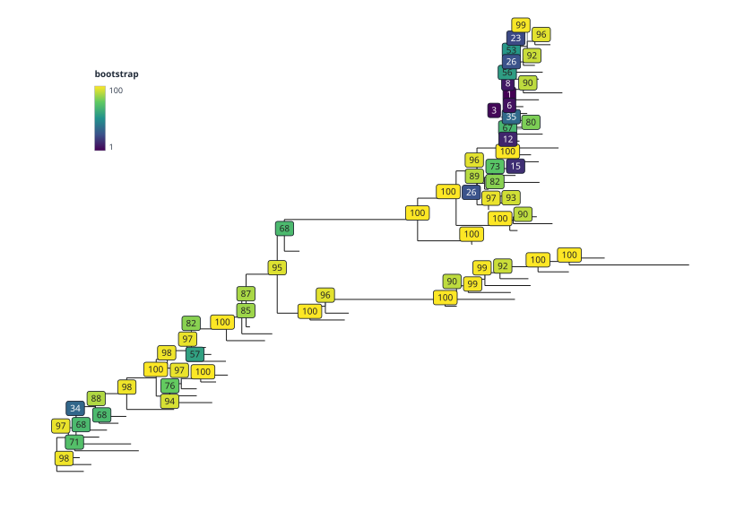
▶ Show / Hide Python Code read_raxmlgeom_label_repelgeom_text_repelscale_fill_viridis_c
from ggtree import read_raxml, system_file, ggtree, geom_label_repel, aes, theme, scale_fill_viridis_c
raxml_file = system_file("extdata", "RAxML", "RAxML_bipartitionsBranchLabels.H3")
raxml = read_raxml(raxml_file)
p = (
ggtree(raxml)
+ geom_label_repel(aes(label="bootstrap", fill="bootstrap"))
+ theme(legend_position=[0.1, 0.8])
+ scale_fill_viridis_c()
)
p
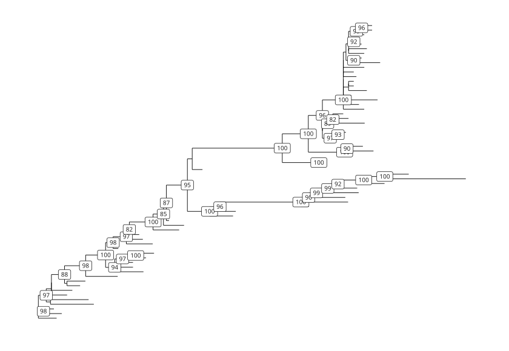
▶ Show / Hide Python Code read_treegeom_label2as_numericis_na
from ggtree import read_tree, system_file, ggtree, geom_label2, aes
nwk = system_file("extdata", "RAxML", "RAxML_bipartitions.H3")
tr = read_tree(nwk)
p = ggtree(tr) + geom_label2(
aes(label="label", subset="~is_na(as_numeric(label)) & (as_numeric(label) > 80)")
)
p

▶ Show / Hide Python Code plot_phyloggtreeladderizegeom_tiplab
from ggtree import set_seed, rtree, plot_phylo, ggtree, geom_tiplab, plot_list
set_seed(42)
x = rtree(5)
pa = plot_phylo(x)
pb = ggtree(x, ladderize=False) + geom_tiplab()
pc = ggtree(x) + geom_tiplab()
plot_list(pa, pb, pc, ncol=3, tag_levels="A")

▶ Show / Hide Python Code rotateConstrggtreegeom_tiplabhexpand
from ggtree import set_seed, rtree, rotateConstr, ggtree, geom_tiplab, hexpand
set_seed(42)
x = rtree(5)
y = rotateConstr(x, ["t4", "t2", "t5", "t1", "t3"])
ggtree(y, ladderize=False) + geom_tiplab() + hexpand(0.15)

▶ Show / Hide Python Code scale_x_breakMRCAgroupCladehexpand
from ggtree import (
read_tree, system_file, MRCA, groupClade, ggtree, aes,
geom_tiplab, theme, scale_x_break, hexpand, plot_list,
)
x = read_tree(system_file("extdata", "TDbook", "tree_long_branch_example.nwk"))
m = MRCA(x, 75, 76)
y = groupClade(x, m)
p1 = ggtree(y, aes(linetype="group")) + geom_tiplab(size=2) + theme(legend_position="none")
p = p1.copy()
mean_x = sum(float(v) for v in p.data["x"]) / len(p.data)
p.data["x"] = [mean_x if int(nd) in (75, 76) else xv for nd, xv in zip(p.data["node"], p.data["x"])]
p2 = p1 + scale_x_break([0.03, 0.09]) + hexpand(0.05)
plot_list(p1, p, p2, ncol=3, tag_levels="A")
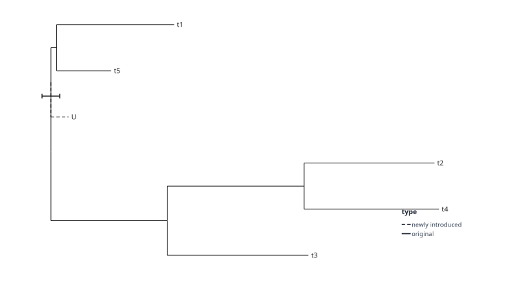
▶ Show / Hide Python Code bind_tipas_tibbleparentas_treedata
from ggtree import (
set_seed, rtree, bind_tip, as_tibble, parent, as_treedata,
ggtree, aes, geom_tiplab, geom_errorbarh, scale_linetype_manual,
theme, NA, hexpand,
)
set_seed(1993)
tr = rtree(5)
tr2 = bind_tip(tr, "U", edge_length=0.1, where=7, position=0.15)
d = as_tibble(tr2)
u_par = int(parent(d, "U")["node"][0])
d["type"] = ["newly introduced" if lbl == "U" else "original" for lbl in d["label"]]
d["sd"] = [0.05 if int(nd) == u_par else NA for nd in d["node"]]
tr3 = as_treedata(d)
p = (
ggtree(tr3, aes(linetype="type"))
+ geom_tiplab()
+ geom_errorbarh(aes(xmin="x - sd", xmax="x + sd", y="y - 0.3"), linetype="dashed", height=0.1)
+ scale_linetype_manual(values={"newly introduced": "dashed", "original": "solid"})
+ hexpand(0.15)
+ theme(legend_position=[0.8, 0.2])
)
p
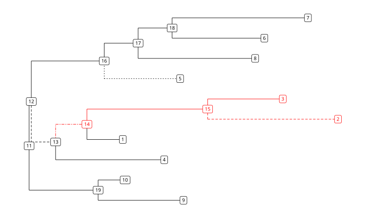
▶ Show / Hide Python Code INnode2geom_labelaes
from ggtree import set_seed, rtree, Nnode2, data_frame, ggtree, geom_label, aes
set_seed(123)
x = rtree(10)
n_tot = Nnode2(x)
d = data_frame(
node=list(range(1, n_tot + 1)),
colour=["red" if i in (2, 3, 14, 15) else "black" for i in range(1, n_tot + 1)],
)
lty_map = {2: 2, 5: 3, 13: 2, 14: 4}
d2 = data_frame(
node=list(range(1, n_tot + 1)),
lty=[lty_map.get(i, 1) for i in range(1, n_tot + 1)],
)
p = ggtree(x) + geom_label(aes(label="node"))
p % d % d2 + aes(colour="I(colour)", linetype="I(lty)")

▶ Show / Hide Python Code geom_nodepointaesplot_list
from ggtree import set_seed, rtree, ggtree, geom_nodepoint, aes, plot_list
set_seed(2020 - 5 - 20)
x = rtree(10)
p = ggtree(x)
p1 = p + geom_nodepoint(aes(subset="node == 13", x="x - 0.1"), size=5, colour="firebrick", shape=21)
p2 = (
p
+ geom_nodepoint(aes(subset="node == 13", x="x - branch_length * 0.2"), size=3, colour="firebrick")
+ geom_nodepoint(aes(subset="node == 13", x="x - branch_length * 0.8"), size=5, colour="steelblue")
)
plot_list(p1, p2, ncol=2, tag_levels="A")

▶ Show / Hide Python Code geom_facettheme_bwxlim_treexlim_expand
from ggtree import (
set_seed, rtree, rnorm, data_frame, ggtree, geom_tiplab,
geom_facet, geom_point, aes, theme_bw, xlim_tree, xlim_expand,
scale_y_continuous, geom_text, coord_cartesian, theme, margin,
)
set_seed(2019 - 5 - 2)
x = rtree(30)
p = ggtree(x) + geom_tiplab()
d_val = data_frame(label=x.tip_label, value=rnorm(30))
p2 = (
p
+ geom_facet(panel="Dot", data=d_val, geom=geom_point, mapping=aes(x="value"))
+ theme_bw()
+ xlim_tree(5)
+ xlim_expand([-5, 5], "Dot")
)
d_lbl = data_frame(**{".panel": ["Tree", "Dot"], "lab": ["Distance", "Dot Units"], "x": [2.5, 0.0], "y": [-2.0, -2.0]})
res = (
p2
+ scale_y_continuous(limits=[0, 31], expand=[0, 0])
+ geom_text(aes(label="lab"), data=d_lbl)
+ coord_cartesian(clip="off")
+ theme(plot_margin=margin(6, 6, 40, 6))
)
res

▶ Show / Hide Python Code geom_hilightggplotgeom_treetheme_tree
from ggtree import set_seed, rtree, ggtree, ggplot, geom_hilight, geom_tree, theme_tree, plot_list
set_seed(1982)
x = rtree(5)
p1 = ggtree(x) + geom_hilight(node=7, alpha=1)
p2 = p1.copy()
p2.layers = list(reversed(p2.layers))
p3 = ggplot(x) + geom_hilight(node=7, alpha=1) + geom_tree() + theme_tree()
plot_list(p1, p2, p3, ncol=3, tag_levels="A")

▶ Show / Hide Python Code layout_circularxlimgeom_rootedgeplot_list
from ggtree import set_seed, rtree, ggtree, xlim, NA, geom_rootedge, plot_list
set_seed(1982)
tree = rtree(30)
pa = ggtree(tree, layout="circular") + xlim(-10, NA)
pb = ggtree(tree, layout="circular") + geom_rootedge(5)
plot_list(pa, pb, tag_levels="A", ncol=2)

▶ Show / Hide Python Code revtsscale_x_continuoustheme_tree2plot_list
from ggtree import set_seed, rtree, ggtree, theme_tree2, revts, scale_x_continuous, plot_list
set_seed(123)
tr = rtree(10)
p = ggtree(tr) + theme_tree2()
p2 = revts(p) + scale_x_continuous(labels=abs)
plot_list(p, p2, ncol=2, tag_levels="A")

▶ Show / Hide Python Code ggsaveimage_readimage_trimimage_ggplot
import tempfile
from ggtree import (
set_seed, rtree, ggtree, ggsave, image_read, image_trim,
image_ggplot, theme, element_rect, NA, plot_list,
)
set_seed(2021)
tr = rtree(30)
p = ggtree(tr, size=1, colour="purple", layout="circular")
with tempfile.NamedTemporaryFile(suffix=".png") as tf:
ggsave(filename=tf.name, plot=p, width=7, height=7)
x_img = image_read(tf.name, density=300)
y_img = image_trim(x_img)
panel_border = theme(panel_border=element_rect(colour="black", fill=NA, size=2))
xx = image_ggplot(x_img) + panel_border
yy = image_ggplot(y_img) + panel_border
plot_list(xx, yy, tag_levels="A", ncol=2)
Master Index Table of All Book Figures
| Figure | Chapter | Book Section | Title (Link to Section) | Key ggtree-py APIs |
|---|---|---|---|---|
| Fig 1.1 | Ch. 1 | 1.2 Understanding Phylogenetic Tree Structure | Phylogenetic tree components: tips, internal nodes, root, and branch lengths | read_tree ggtree geom_tippoint geom_nodepoint geom_rootpoint |
| Fig 1.2 | Ch. 1 | 1.2 Understanding Phylogenetic Tree Structure | Random Newick tree with aligned tip labels and branch-length labels | read_tree ggtree geom_tiplab geom_label aes |
| Fig 1.3 | Ch. 1 | 1.3 Importing Tree with treeio | Overview of treeio data integration and conversion workflow | treeio_diagram TreeDiagram |
| Fig 1.4 | Ch. 1 | 1.4 Extracting Data from Tree Object | Visualizing jtree amino-acid substitutions stored along branches | read_jtree ggtree geom_text geom_tiplab system_file |
| Fig 2.1 | Ch. 2 | 2.2 Combining Tree Data via merge_tree() | Joint distribution of BEAST evolutionary rate vs. CodeML dN/dS, dN, and dS | read_beast read_codeml merge_tree fortify gather |
| Fig 2.2 | Ch. 2 | 2.2 Joining External Annotations and Rerooting | Joining tip/node metadata and rerooting a phylogeny with root() | read_tree read_table left_join root ggtree |
| Fig 2.3 | Ch. 2 | 2.3 Rescaling Tree Branches | Rescaling branch lengths using CodeML dN and BEAST evolutionary rate | merge_tree rescale_tree ggtree theme_tree2 plot_list |
| Fig 2.4 | Ch. 2 | 2.4 Subsetting and Pruning Trees | Pruning taxa from an NHX TreeData object while preserving node tags | read_nhx drop_tip ggtree scale_color_manual geom_tiplab |
| Fig 2.5 | Ch. 2 | 2.4 Subsetting and Extracting Subtrees by Tip | Subsetting around a focal tip with preserved annotations and root-edge placement | read_beast tree_subset ggtree geom_rootedge scale_fill_continuous |
| Fig 2.6 | Ch. 2 | 2.4 Subsetting Trees by Internal Node and Taxonomic Group | Extracting clade neighborhoods by internal node ID and taxonomic group | read_beast read_tree MRCA tree_subset groupOTU |
| Fig 2.7 | Ch. 2 | 2.5 Visualizing Multiple Trees Together | Mirrored two-tree co-phylogeny with highlighted clades and tip connectors | rtree ggtree geom_tree geom_hilight new_scale_fill |
| Fig 2.8 | Ch. 2 | 2.5 Visualizing Multiple Trees Together | Comparing three phylogenetic trees side-by-side with tip linkage | rtree fortify ggtree geom_tree geom_line |
| Fig 3.1 | Ch. 3 | 3.2 Exporting Tree Data to BEAST Nexus Format | Round-trip BEAST Nexus export preserving NHX and CodeML annotations | read_nhx read_codeml write_beast read_beast ggtree |
| Fig 4.1 | Ch. 4 | 4.1.1 Visualizing Phylogenetic Tree with ggtree | Basic tree visualization | ggplot ggtree geom_tree theme_tree read_tree |
| Fig 4.2 | Ch. 4 | 4.2.1 Tree Layouts | Tree layouts | ggtree rtree set_seed plot_list |
| Fig 4.3 | Ch. 4 | 4.2.1 Tree Layouts | Derived Tree layouts | ggtree scale_x_reverse coord_flip layout_dendrogram layout_inward_circular |
| Fig 4.4 | Ch. 4 | 4.2.2 Displaying Tree Scale | Timescaled layout | read_beast ggtree theme_tree2 |
| Fig 4.5 | Ch. 4 | 4.2.3 Two-Dimensional Tree Layout | Two-dimensional tree layout | read_beast groupOTU ggtree theme_classic scale_color_manual |
| Fig 4.6 | Ch. 4 | 4.3.1 Displaying Tree Scale (Evolution Distance) | Display treescale | ggtree geom_treescale theme_tree2 plot_list |
| Fig 4.7 | Ch. 4 | 4.3.2 Displaying Nodes/Tips | Display external and internal nodes | ggtree geom_point geom_nodepoint geom_tippoint plot_list |
| Fig 4.8 | Ch. 4 | 4.3.3 Displaying Labels | Display tip labels | ggtree geom_tiplab geom_nodepoint plot_list |
| Fig 4.9 | Ch. 4 | 4.3.4 Displaying Root-Edge | Display root-edge | read_tree ggtree geom_tiplab geom_rootedge plot_list |
| Fig 4.10 | Ch. 4 | 4.3.5 Color Tree | Color tree by continuous or discrete feature | read_beast ggtree scale_color_continuous theme |
| Fig 4.11 | Ch. 4 | 4.3.5 Color Tree | Continuous state transition in edges | read_tree fastAnc nodeid full_join ggtree |
| Fig 4.12 | Ch. 4 | 4.3.5 Color Tree | Phenogram | fastAnc full_join ggtree scale_color_viridis_c theme_minimal |
| Fig 4.13 | Ch. 4 | 4.3.6 Rescale Tree Branches | Rescale tree branches | read_beast read_codeml_mlc ggtree theme_tree2 labs |
| Fig 4.14 | Ch. 4 | 4.3.7 Modify Compoment Themes | Tree background and color themes | ggtree theme_tree rtree set_seed plot_list |
| Fig 4.15 | Ch. 4 | 4.4 Visualizing a list of trees | Visualizing multiPhylo object | read_r8s ggtree facet_wrap theme_tree2 |
| Fig 4.16 | Ch. 4 | 4.4 Visualizing a list of trees | Visualizing one hundred bootstrap trees simultaneously | read_tree ggtree facet_wrap |
| Fig 4.17 | Ch. 4 | 4.4 Visualizing a list of trees | Annotate one tree with values from different variables | TreeDataList facet_wrap geom_tippoint td_filter new_scale_colour |
| Fig 4.18 | Ch. 4 | 4.4 Visualizing a list of trees | DensiTree | read_tree ggdensitree geom_tiplab hexpand |
| Fig 5.1 | Ch. 5 | 5.1 Manipulating Tree Annotation with Grammar of Graphics | Annotating tree using the grammar of graphics | read_nhx ggtree geom_tiplab geom_label geom_text |
| Fig 5.2 | Ch. 5 | 5.2.1 Labelling Clades | Labeling clades | ggtree geom_cladelab xlim plot_list |
| Fig 5.3 | Ch. 5 | 5.2.1 Labelling Clades | Labeling clades using aesthetic mapping | DataFrame geom_cladelab aes ggtree plot_list |
| Fig 5.4 | Ch. 5 | 5.2.2 Labeling Associated Taxa | Labeling associated taxa | ggtree geom_cladelab geom_strip geom_tiplab plot_list |
| Fig 5.5 | Ch. 5 | 5.2.3 Highlighting Selected Clades | Highlight selected clades | ggtree geom_hilight geom_balance read_nhx scale_fill_manual |
| Fig 5.6 | Ch. 5 | 5.2.4 Linking Related Taxa | Linking related taxa | ggtree geom_taxalink geom_tiplab scale_size_continuous plot_list |
| Fig 5.7 | Ch. 5 | 5.2.5 Displaying Uncertainty of Evolutionary Inference | Displaying uncertainty of evolutionary inference | read_mega ggtree geom_range scale_x_range theme_tree2 |
| Fig 5.8 | Ch. 5 | 5.3 Tree Annotation with Output from Evolution Software | Annotating BEAST tree with length_95%_HPD and posterior | read_beast ggtree geom_range geom_nodelab scale_color_continuous |
| Fig 5.9 | Ch. 5 | 5.3 Tree Annotation with Output from Evolution Software | Annotating tree with amino acid substitutions from HyPhy | read_hyphy ggtree geom_text aes |
| Fig 5.10 | Ch. 5 | 5.3 Tree Annotation with Output from Evolution Software | Annotating tree with amino acid substitution and dN/dS inferred by CODEML | read_codeml ggtree scale_color_continuous squish geom_text |
| Fig 6.1 | Ch. 6 | 6.1 Viewing Selected Clade | Viewing a selected clade of a tree | ggtree geom_tiplab viewClade MRCA plot_list |
| Fig 6.2 | Ch. 6 | 6.2 Scaling Clades | Scaling selected clade | groupClade ggtree scale_color_manual scaleClade plot_list |
| Fig 6.3 | Ch. 6 | 6.3 Collapsing and Expanding a Clade | Collapsing selected clades and expanding collapsed clades | collapse expand geom_point2 groupClade plot_list |
| Fig 6.4 | Ch. 6 | 6.3 Collapsing and Expanding a Clade | Collapse clade as a triangle | collapse scaleClade geom_tiplab groupClade plot_list |
| Fig 6.5 | Ch. 6 | 6.4 Grouping OTUs | Grouping OTUs | DataFrame dist bionj ggtree groupOTU |
| Fig 6.6 | Ch. 6 | 6.5 Rotating Clades | Exploring tree structure via rotate and flip | groupClade geom_point2 rotate flip plot_list |
| Fig 6.7 | Ch. 6 | 6.6 Open Tree | Transforming a tree to fan layout | open_tree geom_tiplab groupClade ggtree |
| Fig 6.8 | Ch. 6 | 6.7 Rotate Tree | Rotating tree | open_tree rotate_tree geom_tiplab ggtree |
| Fig 6.9 | Ch. 6 | 6.5 Rotating Clades | Rotate selected clades | rtree set_seed ggtree geom_tiplab rotate |
| Fig 6.10 | Ch. 6 | 6.6 Open Tree | Open tree with different angles | rtree set_seed ggtree open_tree ggtitle |
| Fig 6.11 | Ch. 6 | 6.7 Rotate Tree | Rotate tree with different angles | rtree set_seed ggtree geom_point2 rotate_tree |
| Fig 7.1 | Ch. 7 | 7.1 Attaching Data with %<+% Operator | Mapping tip and internal node data onto a mammal phylogeny via %<+% | read_tree read_table %<+% geom_tiplab geom_tippoint |
| Fig 7.2 | Ch. 7 | 7.2 Aligning Graphs to the Tree Based on Tree Structure | Visualizing SNPs and trait bars alongside a phylogeny via geom_facet() | read_tree read_table DataFrame ggtree geom_facet |
| Fig 7.3 | Ch. 7 | 7.3 Visualizing a Tree with Matrix Data | Visualizing an H3N2 BEAST phylogeny with its 8-segment genotype matrix via gheatmap() | read_beast read_table gheatmap scale_fill_manual scale_x_ggtree |
| Fig 7.4 | Ch. 7 | 7.3 Visualizing a Tree with Matrix Data | Stacking discrete and continuous circular heatmaps using new_scale_fill() | read_tree gheatmap new_scale_fill scale_fill_viridis_d scale_fill_viridis_c |
| Fig 7.5 | Ch. 7 | 7.4 Visualize Tree with Multiple Sequence Alignment | Pairing a protein phylogeny with an amino-acid MSA in rectangular and circular layouts | read_tree msaplot ggtree geom_tiplab plot_list |
| Fig 7.6 | Ch. 7 | 7.5 Composite Plots Aligned by Tree Tip Order (aplot) | Aligning ggplot2 panels to tree tips via insert_left() and insert_right() | rtree ggplot geom_tile geom_col plot_grid |
| Fig 8.1 | Ch. 8 | 8.1 Annotating Tree with Images | Labelling frog family tips and canvas corner with JPEG photographs | read_tree geom_tiplab geom_image DataFrame xlim |
| Fig 8.2 | Ch. 8 | 8.2 Annotating Tree with Phylopic | Annotating a hominoid phylogeny with colored PhyloPic silhouettes | read_tree phylopic_uid geom_tiplab scale_color_viridis_c %<+% |
| Fig 8.3 | Ch. 8 | 8.3 Annotating Tree with Sub-plots | Annotating internal nodes with marginal likelihood bar (A) and pie (B) insets | getStates ace nodebar nodepie geom_inset |
| Fig 8.4 | Ch. 8 | 8.3 Annotating Tree with Sub-plots | Combining mixed pie and stacked bar subplots on internal nodes | getStates ace nodebar nodepie geom_inset |
| Fig 8.5 | Ch. 8 | 8.4 Have Fun with Phylomoji | Parsing tip labels as phylomoji alongside taxonomic pill labels | read_tree ggtree geom_tiplab DataFrame xlim |
| Fig 8.6 | Ch. 8 | 8.4 Have Fun with Phylomoji | Rendering phylomoji radially across circular and rotated fan trees | ggtree geom_tiplab open_tree rotate_tree plot_list |
| Fig 8.7 | Ch. 8 | 8.4 Have Fun with Phylomoji | Annotating clades with vector emoji icons via geom_cladelab(parse='emoji') | rtree geom_cladelab scale_color_manual DataFrame |
| Fig 8.8 | Ch. 8 | 8.4 Have Fun with Phylomoji | Rendering full-color Apple Color Emoji tip icons directly inside SVG | read_tree ggtree geom_tiplab xlim ylim |
| Fig 9.1 | Ch. 9 | 9.1 Visualizing phylo4 and phylo4d Objects | Plotting phylo4d trait bubble matrices (A) and continuous trait heatmaps (B) | phylo4 phylo4d ggtree geom_tippoint scale_size_continuous |
| Fig 9.2 | Ch. 9 | 9.1 Visualizing ade4 phylog Objects | Visualizing a nested taxonomic phylog tree object | read_table as_taxo taxo2phylog ggtree geom_tiplab |
| Fig 9.3 | Ch. 9 | 9.1 Visualizing phyloseq Microbiome Objects | Reproducing phyloseq::plot_tree() for Chlamydiae OTU abundances | read_tree read_table phyloseq ggtree geom_point |
| Fig 9.4 | Ch. 9 | 9.1 Visualizing phyloseq Microbiome Objects | Combining an Order-agglomerated phylogeny with abundance density ridgelines | read_tree read_table phyloseq ggtree geom_facet |
| Fig 9.5 | Ch. 9 | 9.2 Hierarchical Clustering Dendrograms (hclust) | Visualizing a clustered mtcars dendrogram with groupClade and cylinder badges | read_table dist hclust cutree MRCA |
| Fig 9.6 | Ch. 9 | 9.3 Directed Tree Graphs (igraph::graph.tree) | Visualizing a directed 3-ary tree graph with per-edge arrows | graph_tree ggtree arrow unit rep |
| Fig 9.7 | Ch. 9 | 9.4 Arbitrary Hierarchical Edge Lists | Visualizing global GNI2014 country hierarchy as a circular tree via as_phylo() | read_table DataFrame as_phylo ggtree geom_tippoint |
| Fig 10.1 | Ch. 10 | 10.2 Aligning Graphs to the Tree Based on a Tree Structure | Phylogenetic tree with OTU abundance distribution | read_tree read_table ggtree aes geom_tippoint |
| Fig 10.2 | Ch. 10 | 10.3 Aligning Multiple Graphs to the Tree for Multi-dimensional Data | Presenting microbiome data (abundance and location) on a phylogenetic tree | read_tree read_table factor nodeid geom_hilight |
| Fig 10.3 | Ch. 10 | 10.3 Aligning Multiple Graphs to the Tree for Multi-dimensional Data | Illustration of using geom_fruit() in rectangular tree layout | layout_rectangular geom_fruit geom_tile geom_bar geom_star |
| Fig 10.4 | Ch. 10 | 10.4 Examples for Population Genetics | Antifungal susceptibility and point mutations in drug targets in Candida auris | read_tree read_table groupOTU factor geom_tippoint |
| Fig 10.5 | Ch. 10 | 10.4 Examples for Population Genetics | Population structure of the 1,832 S. Typhi isolates | read_tree read_table factor geom_tippoint scale_colour_manual |
| Fig 11.1 | Ch. 11 | 11.1 Visualizing Differential Taxonomy Clades (MicrobiotaProcess) | Visualize differential taxonomy clade. | ggdiffclade scale_fill_manual guides guide_legend theme |
| Fig 11.2 | Ch. 11 | 11.2 Visualizing Phylogenetic Network Using Tanggle | Phylogenetic network. | read_nexus_networx ggsplitnet geom_splitnet geom_tiplab2 rainbow |
| Fig 12.1 | Ch. 12 | 12.1 Facet Utilities (facet_widths) | Adjust relative widths of ggplot facets. | facet_widths geom_facet geom_bar facet_grid plot_list |
| Fig 12.2 | Ch. 12 | 12.1.2 Rename Facet Labels (facet_labeller) | Rename facet labels. | facet_labeller facet_widths geom_facet geom_bar plot_list |
| Fig 12.3 | Ch. 12 | 12.2 Geometric Layers Supporting Subsetting | Geometric layers that support subsetting. | geom_text2 geom_label2 coord_cartesian theme_light plot_list |
| Fig 12.4 | Ch. 12 | 12.3 Layout Utilities | Layout functions for transforming among different layouts. | layout_dendrogram layout_rectangular layout_circular layout_fan layout_inward_circular |
| Fig 12.5 | Ch. 12 | 12.4 Scale Utilities (xlim_expand) | Setting xlim for user-specific facet panels. | xlim_tree xlim_expand geom_facet facet_grid plot_list |
| Fig 12.6 | Ch. 12 | 12.4.2 Expanding Plot Range (hexpand & vexpand) | Expanding plot limits by a fraction of the x or y range. | hexpand vexpand geom_tiplab ggplot plot_list |
| Fig 12.7 | Ch. 12 | 12.5 Tree Data Utilities (td_filter) | Filtering ggtree plot data in geom layers. | td_filter offspring geom_text geom_nodepoint |
| Fig 12.8 | Ch. 12 | 12.5.2 Flattening List-Column Tree Data (td_unnest) | Flattening ggtree plot data. | nest td_unnest td_filter scale_size plot_list |
| Fig 12.9 | Ch. 12 | 12.6 Tree Utilities (get_taxa_name) | An example tree for demonstrating get_taxa_name() function. | get_taxa_name geom_hilight geom_tiplab labs |
| Fig 12.10 | Ch. 12 | 12.6.2 Padding Taxa Labels (label_pad) | Align tip label to the end. | label_pad geom_tiplab xlim plot_list |
| Fig 12.11 | Ch. 12 | 12.7 Interactive ggtree Annotation | Interactive phylogenetic tree using identify() method. | identify geom_hilight_interactive geom_cladelab_interactive geom_point_interactive geom_tiplab_interactive |
| Fig 13.1 | Ch. 13 | 13.1 Visualizing Pairwise Nucleotide Sequence Distance with Phylogenetic Tree | HPV58 nucleotide sequence phylogeny with nested clade bars and pairwise Hamming distances | read_tree read_fasta groupClade geom_cladelab geom_strip |
| Fig 13.2 | Ch. 13 | 13.2 Displaying Different Symbolic Points for Bootstrap Values | Categorical bootstrap intervals encoded as white/grey/black circular node symbols | read_newick cut geom_point2 scale_fill_manual rootnode |
| Fig 13.3 | Ch. 13 | 13.3 Highlighting Different Groups | Circular phylogeny with groupOTU styling, radial clade highlights, and curved clade labels | groupOTU flip rotate geom_hilight geom_cladelab |
| Fig 13.4 | Ch. 13 | 13.4 Phylogenetic Tree with Genome Locus Structure | BioNJ gene-content tree paired with aligned bacterial operon locus arrows | bionj read_table geom_facet geom_motif facet_widths |
| Fig 13.5 | Ch. 13 | 13.5 Inward Circular Phylogeny Wrapped Around a Geographic Map | SARS-CoV-2 lineage B.1.620 inward circular phylogeny wrapped around a NearsidePerspective Europe map | ggtree rotate_tree geom_polygon geom_path geom_tippoint |
| Fig A.1 | FAQ | A.4.1 Allocating Space for Truncated Tip Labels | Allocating more spaces for truncated tip labels. | xlim coord_cartesian theme_tree2 margin plot_list |
| Fig A.2 | FAQ | A.4.2 Modify (Tip) Labels | Alternative tip labels. | rename_taxa geom_tiplab xlim plot_list |
| Fig A.3 | FAQ | A.4.3 Formatting (Tip) Labels | Formatting labels. | geom_tiplab geom_richtext td_filter hexpand plot_list |
| Fig A.4 | FAQ | A.4.4 Avoid Overlapping Text Labels | Repel labels. | read_raxml geom_label_repel geom_text_repel scale_fill_viridis_c |
| Fig A.5 | FAQ | A.4.5 Bootstrap Values from Newick Format | Bootstrap value stored in node label. | read_tree geom_label2 as_numeric is_na |
| Fig A.6 | FAQ | A.5.1 Plot the Same Tree as plot.phylo() | Ladderized and non-ladderized tree. | plot_phylo ggtree ladderize geom_tiplab plot_list |
| Fig A.7 | FAQ | A.5.2 Specifying the Order of Tips | Specifying tree order. | rotateConstr ggtree geom_tiplab hexpand |
| Fig A.8 | FAQ | A.5.3 Shrink Outlier Long Branch | Shrink outlier long branch. | scale_x_break MRCA groupClade hexpand plot_list |
| Fig A.9 | FAQ | A.5.4 Attach a New Tip to a Tree | Attaching a new tip to a tree. | bind_tip as_tibble parent as_treedata geom_errorbarh |
| Fig A.10 | FAQ | A.5.5 Arbitrarily Colored & Styled Branches | Change colors and line types of specific branches. | I Nnode2 geom_label aes |
| Fig A.11 | FAQ | A.5.6 Add an Arbitrary Point on a Branch | Add an arbitrary point on a branch. | geom_nodepoint aes plot_list |
| Fig A.12 | FAQ | A.6 Different X-Axis Labels for Facet Panels | X-axis titles for different facet panels. | geom_facet theme_bw xlim_tree xlim_expand scale_y_continuous |
| Fig A.13 | FAQ | A.7 Plot Layers Behind the Phylogeny | Add layers behind the tree structure. | geom_hilight ggplot geom_tree theme_tree plot_list |
| Fig A.14 | FAQ | A.8 Enlarge Center Space in Circular/Fan Layout | Enlarge center space in circular tree. | layout_circular xlim geom_rootedge plot_list |
| Fig A.15 | FAQ | A.9 Backward Timescale from Most Distant Tip | Origin of the time scale. | revts scale_x_continuous theme_tree2 plot_list |
| Fig A.16 | FAQ | A.10 Trim Blank Margins for Circular Layout | Trim extra white space for polar coordinates. | ggsave image_read image_trim image_ggplot element_rect |